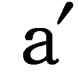
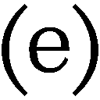

| オブ・ザ・ベースボール | |
| 円城塔 | |
| 文藝春秋 (2012) | |
文春ウェブ文庫
オブ・ザ・ベースボール
円城 塔
オブ・ザ・ベースボール
01
手札にエースが四枚。誰だってこれは負けないと思う。同じカードが四枚、しかもエースで回ってきて負けるゲームがあれば教えて欲しい。俺は知らない。トランプではなく麻雀だろうが勝てる気がする。誰だってそう思うだろう。それでも不足だと云う向きにはもう一人の登場人物を紹介したい。誰あろう名高き道化師。四枚のスペードのエースに並んで、澄ました横顔を晒すクラウン。
四枚のエース。ここまではいい。しかし、四枚のスペードのエースとなると若干の問題がある。一つのデッキで勝負している場合には尚更だ。
「どうせこの町ではこんなことも珍しくないんだろうな」
俺はスペードのエース四枚からなるファイブカードをカウンターの上に放り出す。
「それほど珍しくもないね」
ジョーも不貞腐れたようにカードを放り出す。同じくスペードのエースが四枚に道化師一人。あらかじめ取り除いておいたはずの道化師が二人。
「エースのファイブカードとエースのファイブカードはどっちが強いんだったかな」
「知らん。兎に角あいこなのは間違いない」
俺はジョーの返事に鼻を鳴らして応え、デッキを返してぞろりと広げる。そこに、全てのカードがスペードのエースで御座いましたという結末が登場することはない。他のカードにも重複があるのか、過剰なエースの代わりに何かが欠けているのかは知らないが、あえて調べてみる気もおきない。
イカサマと呼ぶか、奇跡と呼ぶかは好みによる。俺としては、男二人で顔突合せ、ようやく振り出された奇跡がスペードのエース八枚と二人の道化師でテンカードなんていうポーカーは願い下げたい。
「これは縁起がいいのかね、悪いのかね」
過剰な奇跡。過剰な凶兆。引き算をして丁度零にできる理屈を俺は知らない。首を捻るジョーの首を捻り切るのはお預けにして、隣の椅子に立てかけてあったバットを引き寄せて立ち上がる。
ライ・ウイスキーとビールの代金をポケットから取り出して、カウンターへ置く。
02
ファウルズ。
とある町の名前でこの町の名前。人が降ることで有名で、地理の試験に出ることは決してないが、誰もがみんな知っている。人が降るっていうのは人が降るってことで、つまり文字通り人が降る。降るなら雨か雪、せいぜいがところ蛙程度にしておいて欲しいという要望は上まで届いたことがない。
レスキュー・チームは総計九人。八人プラス俺。監督はいない。そんなものがいたとして、どうせ誰もいうことなんてきくわけがない。全員が間抜けなバットを振り回すバッターであり、野球にバッターなんて守備位置がないことは言われるまでもないが仕方がない。第一俺たちはレスキュー・チームであって、ベースボール・チームではない。
背番号四番。俺の番号だ。食い詰めて応募してみたところ四番が空席だったというだけの話で、何かを評価されたわけではなく、歴代何人目の四番なのかは数えている奴がいない。そのくらい前からレスキュー・チームは存在しており、ということは、それより前からこの町には人が降り続けている。
人が降るのは年におおよそ一回程度。控えめにみて百人を下ることのない人間が、頼みもしないのにこの町に落下し続けている。別段同じ奴が繰り返して降ってくるのを趣味としているわけでもなかろうので、何か自然とそうなる仕組みがあるのだろう。
レスキュー・チームに支給されるのがユニフォームとバットである理由もまた不明だ。特に理由なく毎年人間が落下してくるというだけの、非道く単純な出来事を見つめ続けることに悲鳴を挙げた住人たちは、あるとき一致団結して州の役所にかけあった。結果送られてきたのがこの間抜けなユニフォームとバットというわけで、間抜けは、ユニフォームとバットの両方にかかり、俺たちにかかり、俺にもかかる。
一応、町の英雄ということにはなっている。少なくとも消防団の一員程度には引けをとらない。ユニフォーム姿で町を歩けば子供が跳び蹴りをしかけ、ばあさんどもが丁重な挨拶を寄越し、じいさまたちが肩を叩いてくる。そして皆一様に、今年の調子を尋ねてくる。
まあまあですよ、まあまあ。
答えはいつも決まっており、記録の果ての創設以来チーム打率は零行進中。そいつはいけない、お前そこでちょいとバットを振ってみろと、三日に一度は街角でフォームを披露する羽目に陥る。有難い話ではあるものの、顎を引け、脇を締めろ、腰を落とせ以外のアドバイスを頂戴することはない。どこまでも顎を引き、どこまでも脇を締め、どこまでも腰を落とした人間を想像してみて、それが今の俺の容貌だとまとめてしまって差し支えない。
03
理由があるには違いない。理由なくして人が降っては堪らない。理由もなしに降るのであれば、今こうしている瞬間の俺にだって落下の運命が降りかかるかもわからない。地べたに足をつけながら落下の恐怖に怯えるなんてのは真っ平御免だ。少なくとも理由があれば避けられるかも知れないだけ、まだましかもわからない。
町には時折、この現象に興味を持った学者が訪れる。物理学者のこともあり、数学者のこともあり、化学者のこともあり、生物学者のこともあり、医学者のこともあり、工学者のこともあり、文化人類学者のこともあり、社会学者のこともあり、文学者のこともあり、学者学者のこともある。自称他称も様々だ。今のところ説得力を持った説を開陳するに到った人物はいない。
結論としてお馴染みなのは、この町には人間の墜落などというものが実際には全く起こっていないとする説だ。その学者先生の長くはない滞在中に落下が見られなかった場合に多くこの説は登場する。
実際に見てみないことには納得のいかぬ話であり、実際に見たところで信じられぬ光景であるのはいうまでもない。だからこの見解の持ち主は、人の降る町というのは事実に基づかずに広まった一つの説話なのだと結論する。甚だしくなると、町おこしの一環であるという結論を頂いたりもする。毎年同じ時期に人が降るなら、何かの祭りを興すこともできるのかも知れないが、落下は季節を無視して唐突に起こり唐突に終わる。だからこの町の雑貨屋には、落下キャンディなるものは存在しない。
毎年の落下に見舞われ続けている住人にしてみれば、そんな長閑な解説などは薬にしようもないはずなのだが、何故かこの見解の人気は高い。つまるところこれから先、一人の人間も降ってこないということになれば、過去においても人間は降ってきたりはしなかったということでよろしいのではないか。そう考えたくなる気持ちは理解できる。毎日ということになれば話は別だが、せいぜいが一年に一度の人降りでは、目を瞑ってやり過ごそうと考えることもとても自然ななりゆきだ。
たとえばある町に、五百年に一度人が降るとしてみよう。その出来事は伝説にはなるかも知れないが、ただそれだけの話でもある。目撃した人間はやがていなくなってしまうし、結局のところ法螺か錯覚というところで折り合いがつくに決まっている。たとえば三万年に一度しか起こらない現象とかいうものがあったとして、対応する理屈を探る方法や必要があるのか俺にはわからない。
五百年や三万年を一年におきかえてみて、ほぼ似たようなものだと思う。
04
この土地はファウルズであってバルニバービではない。こんな仕事を続けていると、こういう知識が自然と流れ込んでくる。学者先生とは頼んでもいないのに知識を披瀝したがる生き物で、知っていようが無駄な事柄となると尚更意気込む性質がある。ある種の責め苦と言ってよく、万人に気前よく責め苦を分け与えるのが学者というものの責務らしい。レスキュー・チームの職務には、そんな学者連中からの意見拝聴も含まれている。
バルニバービとラピュータは磁力によって反発しあい、その力で以てラピュータは空に浮いている。この直径七八三七ヤードの真円なす円盤の厚みは三〇〇ヤード。うち下方の二〇〇ヤードがアダマントの一枚岩でできている。この岩盤の中ほどに、全長六ヤードほどの巨大な天然磁石が存在しており、島の移動を一手に請け負っている。
最大到達高度四マイル。それ以上には磁石の力が及ばない。島の磁石を上向きにして地面と反発し、下向きにして導引しあう。磁石の操作によってラピュータはバルニバービの上空を漂っている。反発せねば浮かんでいられない以上、大地の側にも特殊な性質が要求されることはいうまでもなく、故にラピュータはバルニバービ上空から離れることはできない。バルニバービは日本の東方二五〇リーグほどに位置しており、すなわちここはバルニバービではない。
まず島が磁力で浮かんでいるとする説には無理がある。記述されている性質から考えて、それは磁石なんてものではありえない。島が浮かぶことができるほどなら、磁石を抱いた人間だって飛べるだろう。謹みある人間が空を飛んだという話を、俺は聞いたことがない。ただ落ちるだけのことであり、飛ぶものは既に人間ではない。串刺しに固定されているならともかく、二つの磁石を操って片方を宙に浮かべておく困難は、誰しも経験したことがあるに違いない。島はたちまち覆り二つの磁石は一体となる。
この町に起こり続けている墜落がそんな劇的な代物ではないことを、俺たちの誰もが承知している。
05
そうして落ちてくる以上、兎に角一度は昇ったのだろうと考えるのは早計だ。そいつはもしかして、あらかじめ上で生まれたのかも知れないから。それとも生まれた時から落ちっぱなしということだってあるかも知れない。
浮かぶの飛ぶのは、なにもラピュータの専売特許ではないとする向きは多く、その手のものを目撃したと主張する住人がいるのもまた事実だ。いわゆる未確認飛行物体ということで、人が落下する際には、その手のものが頭上を飛び回っていたという目撃報告は多い。別段落ちてはこない時にも始終そいつを見かけるという住人もいる。
防空レーダー網の監視記録がその存在を否定していたりもするのだが、レーダーに捕捉されて正体が明かされるようでは未確認とは言えないわけで、こいつに一定の説得力があることは俺も認める。しかし何も説明しないという意味で、あまり前向きの意見とも言い難い。それ以前にまず、証言者たちの見たと主張するものの形態が一向に一致しないという問題があり、落下を目撃した人間の八割以上が、周囲に飛行物体なるものは見かけなかったと証言しているという事実もある。
結局、落ちてくる奴は勝手にただ落ちてくるのであって、どうも高みから突き落とされたりしているわけではないらしい。
落下者は投射されているのではという意見もある。いわゆる人間大砲という奴で、この町でお目にかかったことはないが、サーカスなんかでお馴染みだ。これもどうも事実ではないらしいというのは、落下者たちは真っ直ぐに落下してくるのが知られているからで、一度上がってそれから下がるという放物運動が観察された事例はない。それはたしかに、あまりに巨大な放物線の一部分は直線に見えることも確かではある。地球なるものの表面は湾曲しているといわれているが、まあだいたいがところ自分の周りでは平面と考えておいて差し支えない。
しかしある時突然に人間が発射されてしまうという事件はあまり目撃されたことがなく、記録なども残っていない。有難いことに、何かを発射するには発射装置が必要であるということの、これは強力な状況証拠だ。ある日いきなり発射されてしまうかも知れない人生を俺は送りたくない。
そんな発射装置がどこかでみかけられたことはなく、何かの組織がこの町に人間を執拗に撃ち込み続ける理由というのもちょっと思いあたらない。
06
町とは名乗っているものの、人口は五百人に届かない。誰が棲みつきたいと思うような土地ではなく、隣町との境界は果てしなく遠く、地面だけがだだっ広い。主要な産業は農業であり、畜産業は根付いた例しがない。家畜すらもが日常のあまりの単調さに退屈しきって死んでしまうので育てようというものがない。
町は広大な麦畑に囲まれており、どちらかというと麦畑の中に間借りしている。百戸ほどの家がメインストリートを挟んで並び、無論メイン以外のストリートはない。鉱物資源があるわけでなし、見渡す限りに地平線が取り巻いている。海を見ることなく死を迎える老人はこの大陸に珍しいものではないが、この町では山すら見ずに自死する若者も少なくない。地図に記すべき特徴というものが全くなく、二本の線を適当に引くとそれだけでもうこの町の周辺図として充当する。東から西に流れる川、脇目もふらず南北に走り抜けていくメインストリート、橋を挟んで道沿いにへばりついているのがこの町という具合で、縮尺なんていう結構なものも必要はない。交差点はいくら拡大してみても交差点のままであるという性質を持つ。
町の施設として特記するべきは、役場とジョーの店、ホテルが一軒、雑貨屋二軒、それにレスキュー・チームの集会場くらいのものに留まる。要するに何もないと言い切ってしまって、何もないの方からもう少し何かあってもよいのではないかと憐れみを頂戴するくらいに何もない。
07
俺たちレスキュー・チームの生活は規則正しい。夜明けと共に起きだして、一人でひたすら素振りをしては走り込む。いい加減飽きたところで町をうろつき、その週の守備範囲と定められた麦畑をうろつきまわる。日暮れとともにジョーの店へ出向き、一杯やって家へと戻り、再び素振りと走りこみを行った後、布団にくるまる。
レスキュー・チームの合同練習なんていうものはない。ノックでもすればいいではないかという向きには強調しておきたいが、俺たちはレスキュー・チームであって、ベースボール・チームじゃない。ただでも余計なバットに加えて、更に余分な球までは相手をしきれない。レスキュー・チームに素振りが必要なのかといわれると俺にも自信がないことは認めるが、支給品の方からしてまずバットなのだから文句をいっても仕方がない。バットはとにかく振るものであって、他の用途に用いるべきものじゃあない。ボールをかっとばしたり、野良犬の背骨を砕いたり、人の頭をかち割ったりするのがバットの役割というもので、塀を越える足場にしたり、抱えて添い寝したりするのは間違っている。
バットの使用目的とはバットではないと主張する哲学者にジョーの店で会ったことがある。コップがコップではないように、バットはバットではないとその男は言い張って、草を植えてしまえばコップは植木鉢であると胸をはった。男の言わんとする意味が俺にはよくわからなかったので、とりあえずそいつの前に据えられたグラスをバットで粉砕した。
身をひいて目を瞠った哲学者は、人が降るなんていうのは、要するに人間と人生の混同であるという意味のことをくどくどと言い出し始め、俺がその男をどの角度から粉砕するべきか思案しながらバットを引き寄せたところで退散した。
08
昼の間、とにかく上を向き続けるのが俺たちの仕事だ。落ちてくる人間を助けるのが仕事なのだから当然だろう。助けるにせよ何にせよ、まずは相手を見つけないことには始まらない。上を向いて歩くのでもいいが、横になっていようと小言を言ってくる奴はこの町にはいない。
人間の目が横に並んでいるという事実は、ほとんどの場所で人が降ってはこないことの一つの証拠だと俺は睨んでいる。人間の視野は横に広いが縦には狭い。地表に貼り付いて暮らしていることにも原因はあるのだろうが、俺たちの先祖には落下物を避けて暮らす必要があまりなかったことを意味するはずだ。
ひっきりなしに何かが降り続けるようであれば、少なくとも首のつきかたはもう少しまともなものになったはずで、見上げ続けるせいで首を痛めたりするようなつくりにはなっていないだろう。人間がそんな環境で生き延びてきたのなら、首を痛めた奴が淘汰されて、始終上を向いて苦痛を感じない奴が生き残るのが道理ということになる。
だから俺たちは、昼の大半を寝転がって過ごす。
レスキュー・チームの名誉のためにつけ加えておけば、夜眠れないのはそのせいではない。俺たちの昼は待ちぼうけに費やされて長く、そして夜はただ費やされて長い。
勤務時間が昼に限られる理由は単純で、闇の中での落下物などは見定めがたいからにすぎない。闇の中では何かを救助することも身をかわすこともできるはずがない。俺たちは目を凝らしながら身を潜めて、毎晩の夜をやり過ごす。
09
ほぼ一年に一度という落下間隔は興味深いものだと、数学者が教えてくれたことがある。ただ闇雲に落ちてきているわけではない証拠と言えるとそいつは言った。
おおよそ一年に一度落ちてくるのであれば、落下者は毎日確率三六五分の一で降ってくるのではないかとぼんやり考えた俺の表情を読み取ったのか、数学者は椅子に座り直した。
「平均ではそうなる」
と数学者は宣告し、ならばそれでよいではないかと、俺は始まりかけた講義を畳もうとする。
「しかしその場合、分布はおおよそポワソン分布に従う」
魚がどうとかいう話に俺は興味がない。ポワソンは魚ではなく人の名前だと数学者は教えてくれたが、フランス人には尚更のこと興味が向かない。この町には海がなく、魚はおらず、フランス領でもありえない。
ほとんど一年という間隔が守られているならば、まずは一年を中心とする何かがあって、その周りに揺らぐ仕組みを考えるのが妥当であり、統計資料がいい加減なものであるのは残念なことである等々と勢い込んでいく数学者を前に、俺はそいつを黙らせる方法を考えていた。
物理学者は物理的な衝撃に弱く、化学者は化学的な衝撃に弱く、工学者は工学的な衝撃に弱い。そいつがどんな結果を引き起こすのかを知っているだけに、素早く正体を察知して、恐怖心が先にたつ。その伝でいけば、数学者は数学的な衝撃に弱いということになるはずだったが、俺は数学的な衝撃なるものに出会ったことがなく、それを繰り出す方法を知らなかった。
そいつは役場から持ち出してきた資料をカウンターに広げ、興味深い興味深いと繰り返していたが、何が面白いのか俺にはさっぱりわからない。そのスコア表は俺たちの無能を示したものでもあるわけで、正直全く面白くない。
数学者の言いたいことは要するに、一が出るのがきっかり六回に一回と決まっているのはイカサマサイコロであって、一が続けて二回出ることだってあるということらしいのだが、人が降るなんてのがイカサマであることに、今更そんな推論が必要であるとは思えない。
こいつを追い払うべき数学的衝撃なるものを考え続ける俺の横で、ジョーがグラスを磨きながら訊ねてみる。
「前から思ってたんですが、四十って数は少し大きすぎやしませんかね」
数学者は顔を上げてジョーの顔を眺めていたが、そうですなと荘重に同意を示すと、また資料に向き直り、俺たちはその晩、そいつを追い払うことに失敗した。
10
町と町の周囲には、ＡからＺが順に穿たれた墓標が散在している。遺体から名前が知られようと、出身地が知られようとも関係はない。書類には残るが、墓に墓碑銘は刻まれない。二十六では弁別にはいかにも足りないのだが、ＺからはまたＡに戻って繰り返される。再びＡに戻るころには以前のＡの詳細を覚えている人間はそう多くないし、多くの墓は放置されて一文字のアルファベットも摩滅していく。
落下者の出身、性別、名前、年齢は様々だ。大半は素性の知れぬ死体となるが、たまには周到に身分証を携帯している奴もいる。鞄の中にではなく、ジャケットのポケットや財布に入れておく性質の人間で、なおかつそいつを彼岸だか此岸だかに置き忘れたりしない奴に限られている。携帯電話から素性の知れる場合もある。
死体の縁者に連絡のとれることはほとんどない。俺の知る限りでは一度もない。落ちてくるような奴は世俗と関係を絶っているものだろうというのは少し違う。世俗どころか乳房と縁を切られただけで致命的な赤ん坊が落ちてきたこともある。
俺がこの町にやってきてから、身分証やネームカードから知られた住所に手紙を出し、破損した携帯電話からデータを抜き出して電話をかけ、返事が戻ってきたことも、親類縁者が受話器をとったこともない。
そこに記されているのは存在しない住所や番号のこともあるし、存在はすることもあり、そんな人物のことは全く知らないという返事が返ってくることもある。過去の借主を遡って調べてくれた家主もいたが、全くそんな契約は見当たらないという答えが返ってくるに留まった。電話会社は守秘義務を盾にとり、それでもそんな契約者は見当たらないと何故か小声で教えてくれた。
つまり落下者は、存在しないどこかから、それとも未来から落ちてくる。あるいは決して辿り着かれる心配のない過去から落ちてくる。落下者の所持品に、時代を超えたテクノロジーの痕跡が発見されたことはない。携帯電話所持者が落ちてくるのは携帯電話発明の後の出来事というように、どこかで定められているらしい。少なくとも人間離れした超未来人や原始人の落下が見られた記録はない。
それでも、これが何かの時間旅行の際に起こる事故で、旅行者はあらかじめ、歴史を乱さぬように所持品に制限をかけられているという説もあることにはある。説というよりは、その気になればどんなものにも無理矢理辻褄を合わせることができるという事例とでもいうべきだろう。この説は、自称他称を問わず物理学者に人気がある。この町で気長に待ち続けることにより、いつかは時間旅行機の破片を手に入れることができるかも知れぬと考える手合いは少なくない。
11
ジョーの店の隅にも、一つの墓石が置いてある。記号はＥ。十年前の真昼間、店に落下してきた男を記念したものだ。Ｅは屋根と二階の床を突き破り、カウンターを破壊して床にめりこみ、大地との再会を見事果たした。
十五時を十五分ほどまわったところでの落下ときて店内に人影はなく、ジョーは二階で眠りこけていた。バット片手におっとり刀でかけつけたレスキュー・チームが集合を終えたのは十七時を回ったあたりのことで、八人がそろったところで当時の四番が二階へジョーを起こしに行った。
二日酔いを訴えるジョーをなだめすかしてユニフォームに押し込んで、九人の男はようやく、Ｅと名づけられることになる肉塊の周りに円陣を組んだ。落下地点は店の隅に位置しており、店の壁を崩して円陣の正確さを優先するか、肉塊に足を突っ込んで中心がずれることには御寛恕願うかは意見の対立を見た。
二日酔いのせいか、肉塊を間近で目撃したせいか、円陣のために店を破壊されるかもしれぬショックに襲われたせいか、ジョーはＥと対角をなす隅でえずきはじめた。両脇からジョーを支えながら、九人はバットを体の前に立ててなんとか黙祷の儀式を遂行した。
墓石を立てるのは無論レスキュー・チームの仕事ではなく、墓石屋の仕事に決まっている。男はモップで掃き集められて棺桶に流し込まれ、町のはずれへ運ばれていき、ジョーの店には星空観測用の大穴と、Ｅの字を持つ墓石が残された。
「人型の穴じゃないんだな」
言わずもがなの感想を残し、ジョーは木切れを拾ってきて、天井と屋根の穴をぞんざいに塞いだ。
12
数学者には記録の不備を嘆かれたことがあるものの、レスキュー・チームの集会所の壁に貼り出されている地図は、素人の統計資料としてはなかなかのものといっていい。ただの十字成す道と川の周囲にハートとスペードのシールが群らがっている。傍らの付箋には落下者の推定年齢と落下日時が記載されているが、時刻の方はあやふやなことも多い。ハートは女性、スペードは男性を指している。ダイヤモンドは俺たちの球場を示し、クラブを握るのは俺たちの手だ。
月曜の夜が訪れるたび、俺たちは集会所へ集まって今後の打線の配置を検討する。
百数十だか数百体だかの人間が既にして降ってしまっているのだから、墜落地点の推定なんて簡単だろうというのは間違っている。奴らは、何かから落ちてくるにせよ、その何かが点ほどにも見えない高みから足を踏み外すのだし、とにかく矢鱈と高高度から地面へ迫る。落下の速度がどれほどのものに達するのかはしかるべき筋に聞いてほしいが、それでもかなりの時間、滞空することは間違いない。
俺たちとあいつらの間にはぶ厚い空気の層があり、飛行機が滞空できるのも、奴らが滑空しうるのもそのお陰だ。地球をとりまく大気は身をよじり、押し付けあって昇り下って、休んでいることがあまりない。晴天に落ちる者と雷鳴と共に降り下る者の旅程が同じはずはなく、落下地点は天候に大きく左右される。
ならば、付箋には当時の天候や風向き等が記されるべきだと考えるのはもっともだが、俺たちは地べたに這いずっているわけで、奴らの存在するかも知れない起点における天気なんてものは知りようがない。そんなことを始めた日には、付箋は付箋では収まりきらなくなる道理で、落下者の身長体重、推測される落下の際の姿勢等々、どこまでも溢れていくに違いない。溢れてしまった方の記録は一応役場に保存されてはいるものの、保存されているというだけのことで、あえて持ち出すのは外からやってきた好事家くらいに限られている。それとも着任当座のレスキュー隊員くらいが、倉庫の中でその記録を貪り読む。
13
役場に保存されて溢れる資料は、落下者に関して書き残しうるあらゆることを収集している。鼠すらもが退屈のために出て行ってしまうこの町にあって、資料の保存状態は極めてよい。ただしあまりに膨大にすぎて冗長で、真面目につきあい続けるにはあまりに単調なものでもある。
まず書き残しうるあらゆることと言っても、それ自体が記述者それぞれの特性に関わっており、一定しない。書式を用意しておくという手はあるものの、その他と題された項目が定型を圧倒する種類の書式なんてものは既に書式とは言い難い。落下者は履歴書持参で落ちてくるべきであるという要望はどこに持ち込めばいいのかわからない。たとえ履歴書を携帯してきてもらっても、自分の死体検分書の持参までは期待しがたい。
落下の記録は紙ぺら一枚のことからノート数冊分に及ぶものまで、事例によって様々だ。住人の大勢が目撃していても川に流されてしまった落下者について書き記しうることはそう多くはないし、たとえばジョーの店を狙って落下してきたような奴にはいくらでも悪罵の投げつけようがある。
ひたすら脱線を繰り返して自分の所見から自分語りに入ってしまう記述者もあり、散乱した肉片の配置について淡々と記述し続ける者もある。絵心のある者は現場の無残な光景をスケッチすることもあるし、甚だしきは周囲の風景とともに油彩画を遺した奴もいる。
落下者に対して重要なのは、とにかく落下してきたという事実だけであって、突き詰めてしまえば原因も動機もわかりようがないしどうでもよい。何が肝であるのかには定見がなく、何を書き残すのが将来の解明の為となるのかは皆目わからない。となれば、重要と見做すべき事柄はそいつを観察した奴の価値観にまかせるよりないということになって、職務に忠実という言葉はどこへ向かって発揮されているのかわかりにくい部分がある。
14
アリストテレスによればと、これも又聞きの知識に属するが、万事、原因とは四つに分類されるのだそうだ。質料因、形相因、動力因、目的因。
レスキュー・チームの目的とはいわずもがな、単純に落下者を救助することにあるのだが、無論落下そのものを食い止めることができるならばそいつに越したことはない。元栓を締めてしまうと、レスキュー隊員失業の恐れも不可避的に派生はするが、毎年人間が降り続ける町で間抜けなバットを引きずって歩くような生活は、様々な観点から考えてあまり真っ当なものともいえそうにない。
原因は不明であって、不明なものは食い止めにくい。全く食い止められないとする根拠は薄いが、薄いなりに非道くぶ厚い。せめてどんな原因によるのかが知られれば対策のしようもあるかも知れないというのは一歩後退した考え方ではあるものの、他に手立ても思いつかない。
町を訪れる学者連中の唱えてきた原因というのもまた役場の倉庫に溢れている。どういう種類の義理の感じ方なのかはわからないが、奴らはどこかに提出なり発表なりした原稿や論文、草稿や所見、予断に憶測やらを熱心に送りつけてくる。落下者に関する記述より以上にその内容は多岐にわたって、こいつの分類もまた成し遂げがたい。一つつまらない嘘をついたために、無際限に言い訳を続けなければならなくなった子供のように、奴らは記録相手に罵り合っている。何かを説明したような理屈は、過去貯えられた記録のどれかに反論を受け、反論された側は記録の真性を疑うという行動に出る。全ての記録に整合的に合致する説明というものは成されたことがなく、そもそも正気の説明らしい説明というものが送られてくること自体がほとんどない。
俺たちは一応送られてくる解説のひとつひとつを検討してはみるものの、どちらかといえばそいつは酒の肴に似通っている。
事態は太古よりねじれ続けて繁茂して絡み合い、誰が誰の何の説をどう受け入れて何をどのように受け止めているのか見通しがたい。学者たちは記述者の素養を怪しみ、俺たちは学者の素性を疑っている。全員が自分の履歴書を持ち歩いてくれればという愚痴は、結局落下者についての記述が溢れてしまうこととも繋がって、要するに俺たちはとうの昔に溢れかえってしまっていて何が何だかよくわからない。
15
質料因。落下者が本質的に何でできているのか。人間から。これは一半の真実ではあるが浅い見方と言わざるをえない。人間一般なるものが、老若男女いつかはこの町に落ちてくるというものではないからだ。人間プラスアルファ、マイナスベータ。落下者に共通の要素は今のところ見出されておらず、付加されているはずのアルファベータの正体は推測の域を出ない。
形相因。落下者の本質的現われ。これもまた人間。内奥にアルファとベータを隠し持った、人間型をした人間が落下してくる。四原因の中では一番そのままでむしろただの情景描写に近い。
動力因。凡そ落ちるもの全てはひとりでに落下する。当たり前のことだが、支えがないものは落下する。どこまでも落ち続けることができるのが惑星や衛星、人工衛星であることは知られており、落ちるからといってなにも地表へ落ちてくるとは限らない。なんだかんだと言ってはみても、落ちるものは落ちるから落ちるのであり、惹きつけられるが故に落下する。結果は形相として現われることになるものの、結局この原因も明らかにはされていない。運動の動力因は言うまでもなく重力だ。少なくとも反重力ではない。しかしそいつはただの、落下一般の動力因であるにすぎない。
目的因。最も厄介な原因であって、要するに奴らか誰かは、奴らか誰かの目的があるが故に落下してくる。林檎が木から落ちるのは、物には中心を目指すという目的があるからであると説明するこの原因は、落ちてくる奴にはこの町に落ちるという目的があるから落ちてくると適用される。残念ながら意味はよくわからない。
当人が目的に従って落ちてくるなら、本人にきいてみるのが一番だが、落下済みの人間は、最早言葉を発する種類の構造ではない。目的を知っているのが誰であるべきなのかに関して、目的因は沈黙している。たしかに林檎は中心を目指すという目的を持っているのかも知れないが、それはどちらかというとアリストテレスが整合的に説明を行うという目的に従った目的であって、林檎が自分の目的を知っているのかは疑わしい。だからやっぱり、落下者には目的などないのかも知れなくて、こいつもやっぱり当人にきいてみるのが一番手っ取り早いということになる。
16
集会所の壁には落下地点がシールでマークされている。ばらばらに散らばって、秩序は見えない。落下地点を未来永劫にわたって重ね描きし続けると、何かのメッセージが登場するのかも知れないというのは一つの希望的観測だ。そのメッセージがアルファベットで書かれているのか、漢字で書かれているのか、未知の言語で書かれているのかは予断を許さない。文字である必要性はないのかも知れず、パイオニア十号に積み込まれたメッセージのように、何かの絵である可能性もある。宇宙人の男女を並べて描いた絵が登場するのかも知れず、宇宙人が形なんて常識的なものを持っているかは随分と怪しい。
落下地点を線で結んで、そこに星座を見出そうとする試みは、何でも産み出してしまって役に立たない。見出すことよりは、見出さぬ規律の方が求められているものであるのだが、あらかじめ大胆に野放図であるものには、規律なんていうものが想像できないし、規律なるものを理解できるような奴は、てんでに落ちてくるなんてことをやらかすはずもない。
落下地点を時間に従って順番に結んでも、ひとつ飛ばしに結んでも、別に何かが指し示されたりはしない。どこかの地点に集まっていくように落ちてくるわけでもなく、際限なく広がって分布するわけでもない。空間密度が均一である道理もなく、均一に降るのであれば、落下がこの町に限られるわけはなく、要するに中心部に多く、外縁へ向けて落下頻度は落ちる。たしかに中心じみたものは存在して、道と川の交差点がその中心部にあたる。しかしそこにとりたてて何があるということもなく、ただの交差があるにすぎない。
17
ラムゼー理論。七人の人間が存在する場合に、四人以上が死んでいるか、四人以上が生きているかどちらかであるという素朴な観察から展開されるこの数学理論は、充分な数の素材があれば、任意の構造を見出しうることを示す。星空に好きな星座を見出すことができて、好きなメッセージを読み取ることができるように。つまりは落下場所から見出しうる図形それ自体にはそれほどの重要性は存在せず、見えているものはどちらかといえば、見る側の偏向を観察する契機としての重要性を持つ。
確率論の三大法則。
大数の法則。平均が大抵存在して、十サンプル程を試してみれば、以降余り大きくずれることはないことを保証する。つまるところ落下者は、大体がところ道と川との交差点目がけて落ちてくる。
中心極限定理。適当に放り投げたものの落下地点は、釣鐘型のガウス分布に従う。百サンプル程試してみて、誤差は十パーセントあたり。要するに中心があって、裾野を形成する。おおまかには交差点に落ちて来るものの、それなりの広がりをもって落ちてくる。そのため、交差点限定ではなくこの町を含む広い範囲に人間は落ちてくる。
大偏差原理。必要サンプル数一万強。余りにも平均からはずれた事象は、滅多なことでは起こらない。そのくせはずれ続けることはそれなりに起こり、酔歩する酔っ払いがなかなか家に帰って来られないことも結構起こる事実の説明をする。俺たちはこの町をどこまでも離れて落下者を待ち受ける必要こそないものの、交差点で待ち受け続けると、はずれを引き続ける懼れがある。
何もかもが何かを教えてくれそうでありながら、特段の役には立ちようがなく、パトロールにあたって今更教えてもらわねばならないような知識でもない。どの法則も、参考になれば幸いですといった程度の、謙虚に引かれた境界線を踏み越えてきてはくれず、あとはあなたがたの選択におまかせしますと知らぬ顔を決め込んでいる。そのくせ落ちるものは矢張り落ちてくるのでしょうなと涼しい顔で請け合っている。
18
俺たちはほっつき歩いているものの、ただほっつき歩いているわけではない。なんといっても落下者を救助するのが仕事なのだから、落ちてきそうな場所を選んでほっつき歩く。落ちてきそうだと判断する理由は様々で、各員が信ずるものは微妙に異なる。俺はといえば特に何も信じてはいない。犬が歩くと棒にあたるが、棒を持ち歩いているのは俺の方なので、藪から棒にただぶん殴られるだけで済ますつもりはない。
チームの中には縁起を担ぐ奴もいるのだが、いまだかつて救助に成功した例しはないのだから、厳密なことをいえば縁起なんて担ぎようがない。その朝振った賽の目に従う奴もいれば、集会所の地図に念を込めてマークをすることで、落下者の方をその場所に誘導できると考える奴もいる。戦績は全員零であるために、その信条を非難するなにものもなく、説得されるべき理由もない。
打線の割り振りとはつまり、全員が一箇所にあつまることはやめておこうといった程度の消極的な理由によって行われている。駆けつけるのが一人から二人になったところで、救助できる確率が上がるわけでもないからで、俺たちが持ち歩いているのはバットであって救助マットではない。バットは一人で振るもので、一本の両端をそれぞれ持って振ることはできず、二人羽織は気色が悪い。
どこに落ちてくるかわからぬものは、ばらばらに待ち受けるのがよいというのが経験則だ。内野と外野、ファースト、セカンド、サード、ショート、センター、ライト、レフト、ピッチャーにキャッチャー。集会場をベースに見立てて、交差点がピッチャーの攻撃位置。ベースから後方二七〇度はがら空きだが、これはベースボールの宿命ということで諦めてもらうより他ない。少なくともこの配置で、落下者の四分の一以上をカバーしうる。誰も救助できた例しはないのだから、四分の一に集中しようがなんだろうが、実質的な差は存在しない。
念の為繰り返しておけば、俺たちはレスキュー・チームであって、ベースボール・チームではない。俺たちの持つのはグローブやミットではなくバットであって、マットではない。
19
もしも本気で心底、何が何でも落下者を救助したいなら、町中をマットで覆ってしまえばよい。そんなマットに幾らかかるのかは知らないし、マットで助かるようなものなのかも俺は知らない。
これがどこの誰でもいつかは落下するというようなことであれば、国も本腰を入れて方策を練り始めるに違いない。ただこの町だけで、一年に一度起こる程度のことである限り、本気になりきれない気持ちも理解できる。納税者だって納得しそうにない。
俺としても全員が落下しながら互いのマットで互いを救助しようとするなんて光景はあまり見たいとも思わないので、落下頻度への異議はそれほど強くない。
現在、一分間に百人以上の勢いで地表に生産され続けている人間の群。生産速度は増加を続けており、そのうち一分あたり二百人、四百人と増えていくに違いない。こいつはちょっとばかり奇妙な生産過程であり、そこまでつんのめって加速を続ける生産物というのは他にお目にかかれない。
一つには、人間なるものの持つ、部屋に閉じ込めておいてドアを開けるといつの間にか増えているという性質によるが、生殖活動とは何も人間に固有の機能ではない。人間以外の他の生き物だって増えてはいるわけだけれど、全ての生き物が倍々ゲームで増えていく惑星というのはなんとも想像しがたい。そんなことが起これば、星全体が遠からず生き物だらけになってしまうに相違ない。物事には何事にも限度というものがあり、人間以外の生き物はそこに異議を唱えたりはせずに飢え死んでいく。
未だに増え続けている人間の総数の中で、一年に一人分の体重は比率として一秒ごとに減少していく。
だから俺たちに与えられているのはただのバットにすぎず、それでもバットなんかで救助が可能だと、建前だけにせよ考える阿呆がいるならば、町の住人全員にバットを支給してもいいのではないかと、たまには思う。
20
「あんたはいつまでこの町にいるつもりなんだ」
ジョーがそうたずねてくる。レスキュー・チームの面々は日没とともにジョーの店に集まるが、いつも最後まで残るのは俺とジョーとに決まっている。酒場とはいえ他の住人が顔を出すことはなく、たまに現われる見知らぬ顔は、好事家か学者に限られている。
かつて被墜落を経験したこの店は、なんだか縁起の悪いものとして町の住人からは遠ざけられており、唯一の民家への着弾点に対する態度としては妥当なものだと俺も思う。
ライ・ウイスキーとチェイサーにビール。俺は毎晩、グラスとジョッキが自分たちの呼び寄せた水滴に溺れていくのを眺め続ける。チームの面子と話すことも話すべきことも特にない。
俺はここではない町で生まれて、ふと気がつくとこの町に流れ着いていた。手元不如意が訪れたのがこの町でのことだったのが運の尽きというやつで、こんな町には余所者がありつける仕事などありはしない。俺の育った町にしても同じことで、だから俺は町を出たはずだったのだが、なんだかこうして日々を先送りにし続けている。
かれこれ三年、四年。落下済みの人間を見た回数が二度あるからには、おおよそそのあたりに違いない。カレンダーにさえ見捨てられたようなこの町の季節は非道く薄く、記憶を掻き乱すということがない。乾燥した空気は腐敗さえも遠ざけており、時々空中でカサカサ音を立てている骨の気配を感じることもある。
「何かを救助できたら出て行くさ」
俺の答えにジョーは肩をすくめて見せる。それは一生この町を出て行かないという宣言なのかと口に出さないだけの分別は失っていない。ジョー自らがレスキュー・チームの一員であるわけで、そいつを言ってしまうとおしまいだ。こんな酒場の上がりだけでは、ジョーの生活は成り立たない。ジョーの手が震えているのはアルコールが切れてきているからで、ジョーは自分の店の稼ぎを自分で支払って暮らしている。多分持ち出しの方が多いのではないかと思う。
ジョーがレスキュー・チームに加わったのは、かれこれ十二年ほど前のことになる。落下し続ける人間にうんざりして、食い詰めていたわけでもないのに志願した。最初の救助に失敗し、次の落下者はジョーの店を直撃して、以降十年ジョーはゆっくりとアルコールの海に沈みつつある。
21
全ての人間はいつもどこかへ落ちていく。これがそんな話ならばどんなにいいだろうと俺は思う。堕落に関する説話というやつだ。ソドムやゴモラの乱痴気騒ぎ。振り返って立つのは塩の柱。それならそれで食塩の精製地としてやっていけそうなものだが、この町にはそんなスペクタクルすら存在しない。
この町にイブの存在が認められたことはなく、差し出してくるにも林檎などは寄越しそうにない。この町で差し出すことができるのは麦の穂くらいのものだが、麦の穂で堕落するにはなかなか高等な技術が要求される。
比喩であるならば構わない。口に出される様々な事柄が、いずれもある程度は比喩であるように、この町で続いている落下現象もまた何かの比喩ではあるのかもわからない。しかし比喩にも程度というものがあるはずで、実際に人が落ちてくるとなると、これは何の比喩だのかんだと考えるのは馬鹿馬鹿しい。
今も実際、店の壁際にはＥを刻んだ墓石が突っ立っているし、落下してくる人間を見れば、人は駆け出すものなのだ。川で溺れる子供に対するのと何の違いもない。泳げはしても飛べはしないという違いはある。
「あんたはいつまでこの町にいるつもりなんだ」
ジョーが同じ問いを繰り返し、俺も同じ答えを返す。夜中と早朝に素振りと走りこみを続けているのは、まさに救助の為であって、俺は本当に救助をしてみせるつもりでいる。
「俺がここにいると迷惑かね」
ジョーは再び肩をすくめる。しばらく沈黙してグラスを磨き、傍らの瓶を無造作に呷る。
「あんたはよくやってると思う」
「何を」
「素振りに走りこみ。レスキュー・チームの模範と言っていいと思う。その体格があれば他の町でもっとましな仕事につけるんじゃないのか」
「そうかもな」
たとえば、ベースボール・チームの一員とか。俺にボールをキャッチできるのかは疑わしいことは措いておくとして。たしかに俺はよくやっているかも知れないが、よくやったところでどうしようもないことも世の中には存在する。バットを使ったレスキューがそれにあたるのか、俺は考えたことがなく、考えたことがあればとうにこの町を出て行っているはずだ。
「俺がここにいると迷惑かね」
「あんたは、よくやってると思う」
ジョーが答える。
22
俺の部屋には何もない。無論一般的基準に照らしてのことで、部屋というからには床や壁に天井もある。申し訳程度の窓にはカーテンがかかりっぱなしで、いつのまにかその向こうが壁に置き換えられてしまっていたとしても俺には気づきようがない。天窓というものはこの町には存在しない。理由は想像がつくと思う。
部屋の隅にはマットと毛布がおいてあり、そいつで家具はお仕舞いだ。他には下着と替えのユニフォーム、替えの替えのユニフォームが山を成している。スーツの類は古着屋に売り払ってしまって手元にない。次の仕事を探せと言われれば、下着姿かユニフォームで出向くよりない。素っ裸という手もないわけではない。
俺は音楽を嗜まないし、この町には本屋もない。映画館があるかも知れぬと考える奴はどこかがおかしい。かろうじて雑貨屋に文房具は売られていて、俺の部屋にはノートとボールペンが転がっている。本を手に入れる手段がない以上、自分で書いた本を読む以外の娯楽はない。
電灯もあるがランプも手放せない。どこでさぼっているのかは知らないが、停電と通電時間間隔はかなりのいい勝負を続けている。電話にしても同様で、携帯電話なんてものは荒野で叫び続ける遭難者顔負けの境遇に置かれている。
俺はノートに思いつくままの出来事を書き綴っていく。本当に起こったこともそうでないものも一緒くたに書き続ける。何かが起こるから出来事を書くことができるわけだが、この町では落下以外の事件などは起こらない。ノートの中の俺はレスキュー・チームの一員で、人が降り続ける町に住んでおり、訪れる学者の見解などを書き続けている。ノートの外でも俺はレスキュー・チームの一員で、人が降り続ける町に住んでおり、訪れる学者の見解などを書き続けている。
俺にはここで起こっていること以外の入力がなく、その他のことは思いつけない。ランプの傍でノートに書き込み続ける俺は、ランプの傍でノートに書き込み続ける俺を書き続けていて、書き続けられている。
23
レスキュー・チームの各員には、ユニフォームの着用とバットの携帯が義務付けられている。バットというのは難物であって、いつでも持ち歩くのに適当なものとは言い難い。杖にするには重過ぎるし、釣竿には太い。金槌にしては長いし、バールにしては引っ掛けどころがない。
持ち歩かぬにしても他に利用法もなく、物干し竿には短く、擂粉木にするには長い。
一つの完成した、そのものであるが故にその他のものではありえないものの好例だと思う。おそらくバットはその最初からバットとして唐突に生まれたのだろう。こんなものが何かを改良していくうちに出現したとは想像しにくい。もしくは、バット以外に用法もない中途半端な棒切れがバットと呼ばれることになったのだろうと思う。
常時携帯しろといわれて、これほど扱いに困る代物も世に少ない。素振りを続けて歩くわけにはいかないし、肩に担ぎ続けるのもいかにも間抜けだ。引きずっていけば、レスキューという仕事の崇高さを持ち出されるし、蹴り進むには形が悪い。
歴史上この困難を共有してくれるのは日本の侍くらいのものではないかと俺は疑っており、奴らはなんと二本の金属製バットを腰に差して練り歩いていた。バットを奪われることはそれ以上ない恥辱とされて、腹にバットをつきたてて自害することを強要される。正直言って、俺にはなまくらバットを自分に貫通させるような度胸がない。奴らの自害の場には、介錯人と呼ばれる助っ人がおり、バットで腹掻っ捌いた罪人の頭をぶん殴ってとどめを刺したのだと言われている。最初から殴りとばして昏倒させてやればよいと思う。
不審であるのは、この自害においては、自分の腹をどこまで引っ掻き回すことができるかが名誉の基準とされていたらしく、作法によれば、左から右に引き回して、上に引くのが手順だという。御丁寧にも十文字に捌く流儀もあるのだそうで、俺には日本人というものがよくわからない。バットにはバットとしての利用法ってものがある。
24
長い年月の間に、バットの持ち運び方には流儀ができており、流行廃りも存在する。戦争中には捧げ銃みたように携行するのが当然とされたのだそうだが、今は退役軍人の持つ晴れの日の傘のように、腰に引き付けて歩くのが主流を占めている。背負うだのベルトに突っ込むだの、あえて太い方を持つだの、しゃぶって歩くだのいった奇抜な案は、急速に広がり、急速に廃れる。結局のところ面倒くさいのであって、扱いは自然と傘と同じ程度のものになる。
州がこの町に定めたレスキュー・チームの総員数は九人。俺たちは一応のところヒーローであり、何もしないヒーローの割には崇敬を集めている。子供と老人から人気は高く、子供たちの中には、俺たちのバットの持ち方を真似して歩くのも多い。クールだ粋だという評判は俺たちの内面とは関係なく子供たちの間に広がって、めまぐるしく変転する。指を鼻の穴に突っ込んでいるところを目撃された一員の評判が一夜にして下がることも珍しくはなく、自分の吐き棄てたガムを踏みつけて、靴底を掻きとっているところを見られただけで評判を下げることもある。
小さな町のことであり、野球のチームなどは存在しないが、それでも子供たちは小さなバットとグローブを持って真似事などして遊んでいる。俺たちの全員が参加すれば対抗試合などもやってやれないことはないが、残念ながら俺たちはベースボール・チームではない。
パトロールの合間に子供たちの偽野球を観戦するくらいまではしてみても、のこのこ出て行ってノックを始めたりするのは御法度だ。誰が見ても明らかな職務怠慢、もとが常時怠慢しているようにしか見えぬ仕事である以上、俺たちはその手の職業倫理に敏感だ。
子供たちは俺たちを見ると駆け寄ってきて、成長するに従い蔑みの目をこちらへ向けるようになり、そして歳をとってまた、声援を送り始める。それがこの町の住人と俺たちの間の関係らしい。
25
俺たちレスキュー・チームはバッターだけで構成されていて、全員が同時に打席に立ち、阿呆面上げて空を見上げている。この時点でこれはもうベースボールではありえないのは明らかだ。
空のどこか高みにはおそらく一人のピッチャーがいて、そいつはどうも職務に熱心ではないらしく、一年に一度程度の投球を行う。
この見解に異論があるのは、俺も何人かの国文学者から聞いて知っている。空にいるのはキャッチャーに決まっていると、奴らは何故か断言する。奴らに言わせれば、空のキャッチャーは非常に職務熱心で、崖へ向かって殺到する馬鹿野郎どもを必死に受け止めては投げ返しているのだという。この町に落っこちてくるのはキャッチャーの腕をすり抜けることに成功した奴らであり、それはそれで評価に価する人物なのだと奴らは主張する。
レスキュー・チームの間で、その見解に対する評価は非常に低い。空にいるのがキャッチャーなら、俺たちがバッターである理由がさっぱりわからない。物事にはある程度とはいえ道理というものがあり、キャッチャー対バッターなんていう勝負は聞いたことがない。支給されているのがグローブであったなら、俺たちの反感もそこまで強くはなかったに違いない。唯々諾々と捕球練習にいそしんだ可能性だってある。キャッチャーがこぼした球を外野が拾っていけない理由は存在しない。キャッチャーが余りにもへぼだった場合には、こぼれ球を前提に、キャッチャーを囲むようにして守備につくのも一つの戦術というものだろう。
そこまで譲ってみせるにせよ、矢張り俺たちが攻撃側に属していて、決して守備側ではありえない強固な理由が一つある。俺たちのチームは既に九人から構成されており、既定の応募枠は一杯で、余分なキャッチャーが入り込む余地はない。
こいつがバレーボールではないことは、このバットが保証する。俺たちの仕事がベースボールではないことは、俺たちがレスキュー・チームであることが保証してくれている。
26
空には大抵染みがあり、何もない青空なるものには滅多にお目にかかれるものではない。視野の隅に飛び込んできた染みに向かって勢い込んで顔を上げてみると、染みが一緒に移動することもある。その正体は眼球表面についた塵であるわけだが、その程度のものにだって俺たちは即座に反応する。反応しなければ間に合うはずがない。
レスキューの大原則は、まずは落下地点に辿り着くことにある。落下前に辿り着かなければどうにもしようがないことは、如何なる立場の者からも同意が得られることと思う。もしも落下前に予測地点にたどりつけたとして、そこから先の想定が若干茫漠としていることは俺も認める。それでも未だかつて、落下以前に現場へ辿り着けた人員がいないことをもう一度指摘しておきたい。
俺たちは日々訓練を重ねてこそいるものの、充分なスタート・ダッシュへと辿り着いているとは言い難い。この事実の前には、体格改造の議論が行われており、俺たちはまるでベースボール・プレイヤーのようなこの体格を棄てて、スプリンターの体型を目標とするべきなのではないかとする意見もある。ともかくも現場へ早急に辿り着かねばならない以上、一定の理は存在するのだが、この議論はあまり真面目にとりあげられたことはない。
そうして辿り着いてみて、その場で一体何ができるのかという反問に答え得た者がいないからだ。ひょろひょろした短距離走者に何ができるものかと俺たちは笑い合い、何の当てもないままに、太腿や二の腕を叩いてみせる。
現状の俺たちに何ができるのかは誰も言い出さない。辿り着いた者がいない以上、誰にもそんなことはわかりようがない。
27
人間は一体何処から降ってくるのか。気圏についての知識はあまり大したことを教えてくれない。宇宙の果てからやってくるのではないことは確実で、範囲を銀河系から太陽系に、火星、月まで縮小しても、まだまだ縮尺が大きすぎる。奴らの残骸には真空に晒された形跡は見当たらないし、こう言ってしまえばそれまでだが、至極普通の墜落体であるにすぎない。
最初の高度に従って、地表への落下速度が増していくのならば類推のしようもあるのだが、幸いにしてこの星は空気の層をまとっている。星の直径に比べれば非常に薄い膜ともいえるが、俺たちにとっては充分厚い大気の層だ。
落下者は速度に従った空気抵抗を受け、速度が増すにつれて抵抗は増し、どこかに吊り合いが存在する。それがどのくらいの速度であるのかは、物理学者に聞いてほしい。俺の目には、奴らが落下者を球形と仮定しようと言い出す姿が浮かんでいる。
何故かこの町を目指して落下し続ける人間の集団。この現象が受け入れがたいことはしつこく繰り返してきたとおりで、いっそのこと、宇宙はどこかへ向けて落下し続ける人間だらけと考える方が俺の心は休まる。その場合、地球のあらゆる場所に人間は気紛れに降り続けることになり、地球に限らず、あらゆる恒星に、あらゆる惑星に、あらゆる衛星にそいつらは落下し続ける。落下できる奴はまだ幸いというもので、大半の奴は落ちることさえ許されない。そいつらは星を利用したスイングバイで方向を変えてまたどこかの恒星系へ向けて飛び去っていく。
落ちた人数分はどこかから供給が成されて、これもどこかで吊り合いが存在する。ところで宇宙は拡大を続けているそうなので、星から星への距離は伸び続けて、宇宙を漂う人間の数はただ増えていくだけということも充分有りうる。
宇宙は人間に満ちてはおらず、というのは落下地点がこの町に限られていることからして、みみっちい現象であることは疑いなく、そもそも誰も真空の海を渡ってはいない。だからただ単に、俺は宇宙に人が満ちるのをどこかで望んでいるのだろうってことになる。
28
落下開始点は少なくとも雲の上にある。雲を突き破って落下してきた人物が目撃されたことがあるからだ。晴天の時はどうかといって、気がつくと宙に点が浮かんでおり、こちらへ向けて落ちてくるという以上の観察は行われたことがない。青空なんてものはもとから距離感が掴みがたく、望遠鏡なるものは拡大することが仕事であって、引き換えに視野を縮小して、定点観測には向くが全天観望には不向きときている。視野全体を保持しながら細部へ果てしなくズームインする機構を青空と呼ぶのではないかとは俺の意見だが、賛同を得られた例しはない。
春の青空、夏の青空、秋の青空、冬の青空を眺めて俺は暮らしている。どれも同じ青空であるのはこの町がこの町であるからで、四季と呼ぶほどの表情の変化は空にも地にも現われない。吸い込まれるようなという比喩表現には得心が行くが、残念ながらそれによって俺が上空へ持ち上げられたことはない。
俺はひとつの点をみつける。点を見つけるのが俺の仕事で、俺は点をみつける。点が俺をみつけたりしないことは過去の経験から知っている。俺がこの町にきてから起こった墜落を、俺は目撃していない。墜落後の現場には行ったが、実際の落下を目にする光栄には浴したことがない。
だからこう言うのが正しい。俺は初めて点を見つけた。みつけたものは点だった。点が線を引いて、平面へと突き立っていく。
今週の俺の打席はライトにある。間違えて欲しくないところで、守備位置ではない。
29
落下者の証言がとれない理由は簡単で、地面に衝突した奴らの中で、何かを喋ったり書き残したりすることができる奴がいなかったせいに決まっている。残骸を見る限り、その肉塊は何かを証言する以前に何かを考えていそうですらない。落下者から証言をとろうとするのは、レアの牛肉を問い詰めるのとあまり変わらない。
それでも世の中には幸運というか強運の持ち主がいるもので、スカイダイビングの生き残りというのは存在する。無論スカイダイビングは死へのダイブではなく、大半は生還するに決まっている。パラシュートが開かなかったにもかかわらず、転がって散らばる自分の魂を掻き集めることができた数人が存在するという意味だ。
そこから何かの知見を得ようとする試みが、実りある結果を導いたことはない。この場合の落下者は皆一様に失神してしまう。失神したくなる理由を想像できないこともないのだが、どこか得心のいかぬものが残ることもまた確かだ。
眼前に広がる光景のあまりにもあんまりさに落下者は失神する。パラシュートが開かないという動転も強く加わる。そうは言っても、目を瞑ってしまえばよいのではないかという評言が、あまりに無責任だという異議は認める。しかし一人くらいはそうしてみた奴がいてもいいのではないかと俺は思う。思考実験においては、自分が落ちようが相手が向かって来ようが、両者ともに身を寄せ合おうが、区別はつかない。足元が覚束なく、耳元を、全身を風が吹き抜けることはこの際無視する。無視できないことは重々承知だが、一方向からの激しすぎる風の連続で人が失神したという話を俺は聞いたことがない。
そんな考えを抱きつつ失神を逃れ、落下したにもかかわらず何故か助かり、その間の感想を述べてくれる奴がいてくれてもよさそうなものではないか。
貴重な証言とはなるに違いない。何の誰にとってどう貴重なのかは俺の知ったことではない。
30
グライダーから二度落ちた男がいる。そんな男は捜せば何人もいるのだろうが、この男の墜落は通常のものと若干異なる。一度目はグライダーから落ちた。二度目もグライダーから落ちた。それでは同じではないかというのはもっともだが、二度目のグライダーはディスプレイの中にあったというのがこの男に特異なところである。テレビの画面に映っていたグライダーを見ていたというわけではなく、コンピュータに繋がれたディスプレイを眺めていた。大振りの賽の目が点滅を繰り返す光景を眺めているうちに、不意に落下した。
この間の平仄を伝えることは非道く難しい。
言えることは、その時コンピュータがクロックを回して計算していたのが、セル・オートマトンと呼ばれる一つの算数的玩具の挙動であり、一つの点滅パターンがグライダーと名づけられていたことくらいだ。
とあるルールに従った光点の挙動がグライダーを形成し、それを見つめ続けていた男が墜落した。起こったことはそれだけにすぎない。
男の名前は、クリス・ラントン。
墜落の瞬間、グライダーこそが生命だとの直観が彼を襲う。むしろ直観の乱気流が彼をグライダーから突き落とした。
このなんだかわからない墜落は、俺たちに向けて繰り返される墜落とは一見似ても似つかないのだが、単に視点が違うだけだとも強弁しうる。俺たちは否応なく法則に従って動かされていて、そしてこちらへ向けての墜落を目撃する、蛍めいて規則正しく明滅を繰り返す光点だ。
現代に暮らす俺たちは、彼の直観が不完全なものだったことを知っている。彼が頓悟すべきだった命題は次のようなものだと俺は思う。
墜落するものこそが、生命である。
31
町は麦畑に包囲されていて、道と川以外に特徴的な地理的構造物は存在しない。町の主要産業はダイヤモンドの産出ではなく、麦の生産。ウイスキーもビールも自家製で、他所へ出荷するほどの生産量はない。
ファウルズ。その名のとおり、一度としてヒットを飛ばしたことのない田舎町。四季さえもがこの町のことは避けて通り、家畜でさえも退屈死する。醸造が行えるということは、微生物は退屈しないという一つの例証であると考えることができ、俺たちが微生物より高等なものであるのかには自信がない。
町には自称他称の学者たちが訪れては見解を残し、それぞれの意見を送りつけてくるのだが、解決へ向けた何かの一致が見られたことは一度としてない。一致が得られなければ解決はありえないのかといわれると自信はないが、その場合どの意見を解決策として選択するべきなのかよくわからない。永く逗留するような物好きはなく、移住してきた奴もいない。吹き溜まるほどの凹凸を欠き、あえて生まれてくるほどの魅力も備えていない。
ファウルズ。人が降る。おおよそのところ年に一度の頻度で降り、これまでの最長間隔記録は四百二十三日。最短記録は三百十一日。落下者の素性には規則性がなく、季節も気にせず、場所も問わない。場所を全く問わぬというわけではなく、おおよそこの町のへばりついている十字めがけて落下を試みる。
落下してくるのか、目がけて投げ落とされるのかは誰も知らない。
ただの十字は、どこまで接近してみてもただの十字であるという性質を持つ。だから落下者からの展望を想像してこうなる。視野一杯に広がる十字。落下を続けてみてもただの十字。どこまでも十字。落下者にとって不幸なことには、十字は奥行き向こう方向にどこまでも続いているわけではなく、下で待ち構える俺たちの為の足場というものがあり、十字が描かれている平面がある。
落下の距離を終端速度で割って、一つの時間が切り取られる。その時間内に生起した落下者の内面は他の誰かに伝達されることがない。
32
俺は走り出し、走り、走る、走っている。こけて起き上がり、バットを拾って走る。
時空間の外枠が定められて、目盛りが穿たれて分割される。この瞬間から、俺にとって距離と時間は完全に交換可能なものとなる。落下者の高度割る落下速度。落下予測地点までの距離割る俺の速度。後者の数字が前者を切れば、俺は追いつく。今や俺の位置はフィートで測ることができ、秒でも測ることができる。速度かける時間。俺は俺の速度を追い越すことなく俺の速度で麦畑を無理矢理に押し分けて走り続ける。制限時間は無限にして有限。果てしない空の上から、秒針が刻み落ちてくる。
これまでの誰もがそうだったように、目算して落下に間に合わないことは確実。俺は俺の速度を越えて走ることはできないが、この際この場にあってそんな些細なことには目を瞑ることにしたい。
メトリック。ジョーの店で会った物理屋に教わった言葉。時空間において採用されている物差しでは、距離は空間的距離の自乗マイナス時間の距離の自乗の平方根で測られる。距離のくせに、時間と絡み合っている。ひとつの途方もない限界があって、その限界を超えることはできない。その限界では時間経過が停止しっぱなしになる。
俺は俺の速度の限界を超えて走り続ける。
「オー」
俺は叫ぶ。口を開けっぱなしにして、息の続く限り時間の経過と一緒にオーを引き伸ばし続ける。肺が空になる最後の息を、ルの音で停止させる。
「オール」
有限の長さを無限に引き伸ばそうとするように、俺はオールを何度も引き伸ばす。
「オールライト」
オールライト、オールライト、オールライト。大丈夫。全ては正しい。正しいに決まっている。決まっているが故に正しい。
「オーライ」
オーライ、オーライ、オーライ。
叫びながら俺は麦畑を走り続ける。
33
エルンスト・マッハの思考実験。片手に吊り下げたバケツに水を入れ、手首を捻って回転させると、中央がへこむ。遠心力が水を外側へ引っ張り、水面は漏斗状の形をとる。これは一見、運動の相対性を破る事柄のように思えなくもない。回っているのはまるでバケツ自身であるように思える。
この実験に対する答えはこうなる。もしもバケツが静止しており、バケツを中心に周囲の宇宙を回転させれば、矢張りバケツの水面はへこむに違いない。
この主張が実際に真であるのかという実験は、今のところ行われたことがない。俺自身にこの仮想実験に対する感想は何もないが、それでも疑問に思うことはある。もしも二つのバケツが回されていたら、それに対応するバケツ静止宇宙の回し方はどういうものになるのだか想像がつかない。一方のバケツは、他方のバケツは自分を中心に回っていると考えて、他方もやはり、相手は自分を中心に回っていると考える。結局回っているのは何者ということになるのか、俺にはよくわからない。
物理学者が俺に憐れむような視線を向けたことは覚えている。
34
落下者は頭を下に落ちてくる。白髪なのか白い帽子なのかはこの距離からはわからない。体のまわりではためく黒が、コートなのか翼なのかも判然としない。
「カム」
俺は叫び声を切り替える。
「カムオン」
オン。何の上に。俺の上に。ぴったり俺の上に落ちてこられてはかなわないので、だいたいのところ俺の上ということでお願いしたい。
「カァモン」
限界を超えた俺の速度が、落下者の速度が刻む制限時間の内側へ踏み込む。カモン、カモン、カモン。思考はカモンの反復に支配されて他の考えが発火する余地を残さない。落下予測地点。カモン。行き過ぎるのが最悪でカモン、俺の仕事は落下地点に到着したところでカモン、第一段階をようやく終えるにすぎずカモン。俺の本当の仕事はそこから始まる。
肩に担いできたバットを下ろし、両手での保持に切り替えて走り続ける。三角測量をしているような時間的余裕はあるはずがなく、俺にはそんな素養もない。全ては目算だけで進んでいき、向こうにその気が窺えぬ以上、調整は俺の側で施すよりない。
俺の頭上に、今は人型の黒い塊がある。バットを衝いて体を支え、俺はスイングの準備に入る。目算よし、足場よし、呼吸は条件つきでよし。一瞬前の落下者の位置と、次の瞬間の落下者の位置を結ぶ直線が、俺のストライクゾーンを真上から貫く。一瞬ごとに身震いする直線にあわせて俺は行きつ戻りつ、位置取りを補正する。フォークやカーブがやってくるわけもなく、直上きってど真ん中ストレート。そう難しいコースではない。
35
俺の懐に飛び込んでくる老人、この距離で見てそれは老人としか思えない。この角度からでは表情は窺えないが、確認の為に回り込むほどの時間的余裕はない。頭を下に逆さまに直立して落ちてくる。それとも静止した老人に向け、この宇宙が落下していく。
バットを構え、腰を落とす。顎を引いて脇を締める。落下してくる老人を見据えて、俺はスイングに移行する。何故かという問いはありえない。俺はレスキュー・チームの四番であり、備品はバットで、バットには結局バットとしての用法しかありえない。
俺の使命は、落下者を打ち返すこと。
レスキュー・チームに課せられている使命とは、天上のピッチャーの頭上を越えて、落下者を返却することに決まっている。誰も決して口には出さないし出せるはずもないが、それ以外の結論には辿り着きようがない。俺が貯えておくべき体重はどの程度のものだったのか見当もつかない。二百ポンド。三百ポンド。四百ポンド。いっそ一億二千万ポンドといわれる方が気が楽というものだ。誰にもどんな怪力の持ち主にも、足を踏み外し済みの人間を打ち返すことなんて芸当ができるはずがない。
誰もが最早こんな悠長な落下にはうんざりしきっており、ことここに到っては、ただ打ち返すことだけを正しい解決とするより他ない。
老人の白い頭をボールに見立て、俺は深く息を吸って息を止め、ストライクゾーンへ向けて過去から未来へ向けて全力でスイングする。俺はバットを振り抜いて、俺と老人ははじきあう独楽のように回り飛ばされるだろう。
オール。ライト。
全ては正しく間違っている。
カモン。
36
俺の背中にバットが食い込み、背骨をへし折って内臓を巻き込み、俺自身と絡み合いながら俺の意識を撲殺する。
この結末を、俺は麦畑にいた頃から知っていた。
ファウル。
俺は最期にこの間抜けな打者に向けてそう言ってやるつもりでいたが、そう宣言することができないこともまた知っていた。
37
「打ったか」
両手と右足先をバットに粉砕され、そのまま激しく回転して放り出されて打ち身をこさえ、戸口に這いずって現われた俺に、ジョーが目を上げる。
「打ったさ」
俺は応える。カウンターへ向かって俺を引きずっていく俺を、ジョーは手を差し伸べる素振りも見せずに無表情に眺めている。ジョーがアルコールに依らずに小さく身震いしてみせる。
「どこまで」
「どこまでも」
ようやくカウンターへたどりついた俺の前に、ジョーがグラスとジョッキを叩きつける。俺の手は持ち上がるはずもなく、両側に垂れたまま揺れている。
「こんなこともこの町では珍しくなかったりするのかね」
ジョーはグラスを磨く作業に戻りながら、横目でこちらを観察している。俺の目の前でグラスとジョッキが自分の呼び寄せた水溜りにゆっくりと溺れていく。
「いや」
体の反動を利用して右手をカウンターに放り出した俺に、ジョーはようやくお定まりの身振りを取り戻して、肩をいつもより大きくすくめてみせた。
「知る限りあんたが始めてだ」
俺の頭が抵抗のしようもなく惑星に引かれ、ジョッキと盛大に激突する。
38
あとのことは、無論聞いた話とするしかない。
俺はジョーの店でぶっ倒れたまま、店の二階に二ヶ月ばかりピン止めされて固定されていたからだ。
老人の遺体は翌朝、残りのレスキュー・チームの手で検分され、丁重に埋葬された。俺の叩き出した飛距離は二十フィート。俺の方も同じく二十フィートほど跳ね飛ばされたことが現場検証から判明した。どうでもよろしいことながら、落下地点はレスキュー・チームの張っていた仮想のダイヤモンドのライトスタンド遥か向こうということで、場外大ファウルというのが落下地点から割り出される記録になる。俺を中心点とした記録としても、とにかくファウルであることは間違いない。落下地点として特に偏った配置ではなく、集会場の地図に新たに貼られたスペードのマークは、他のマークに埋もれているただのひとつのマークという以上の特徴はない。
遺留品は分類されて、町の倉庫にしまわれることになったが、そのうち二つだけがあちこち括りつけられた俺の元に特例として回されてきた。一冊の薄いノートと一枚の写真。どちらも血糊にまみれているが、全く判別不能というほどではない。
ノートに何が書かれているかなんてことは確認するまでもなく、書き上げてもいないのに勝手に書き上げられた俺のノートに決まっている。手間が省けたと喜ぶべきなのか今の俺には判断がつかない。落下して拾われて、また落下することを強要されているのだろうこのノートは、俺が書き写さない限りは、いつかぼろぼろになって消え果ててしまうだろう。消えるに任せるべきことのようにも、いつまでも維持し続けるべきことであるようにも思える。
写真に写る男の姿に見覚えはない。そこに写っているのは、今の俺自身ではないし、落下してきた老人ほどの高齢に達した男でもない。俺と老人の時間的真ん中あたりに位置する中年男が一人、器用にも顎を引き、脇を締め、腰を落としてそのくせ直立しているだけの写真にすぎない。
俺には見覚えがない姿形であるが、俺の顔と視線を左右にしていたジョーは、矢張り似ていると言わずもがなのことを重々しく宣言し、その一葉を俺の腹めがけて滑空させた。
俺はどうもこれからまだ生き続けるらしい。俺が自分で自分をたばかることに喜びを見出す性質の人間ではない限りにおいて。勿論なにかを真にたばかるなんてことがどれほどの難事であるのかについて、俺は充分ではないにせよ少しは思い知らされている。
39
老人の体にめり込んで一体化していたバットは、老人と共に埋葬された。わざわざ引き離すには厄介に絡み合っていたらしく、要するに面倒であったらしい。
ユニフォームは三着寄越す癖に、バットは一本しか支給されない以上、俺はバットを失ったということになる。俺は備品損失の始末書を書かされ、代金は残りの給料から天引きされた。新たなバットを支給されて腹かっ捌けと命じられなかったことに俺はひっそり安堵の溜息をついた。
俺の処遇に関しては、町と州の役場の間で何度か書類が行き来したのだそうだ。ホームランであれば話が早かったのだがと真顔で告げた町役場の係員が何を言いたかったのか、俺には未だにわからない。
最終的には、バットを失ったことにより、俺はレスキュー・チームの一員である資格を失ったのだという判断が下された。落下してくる人間を受け止めるならともかく、バットで殴りつけるとはどういう了見だという議論が起こりかけたらしいが、今更にしてあんまりであり、責任の所在をどこに持っていけばよいのか壮絶な押し付け合いが発生しかけて、全てはうやむやのままにしておくことが無難であるということになったらしい。
落下者をバットで打ち返すことを禁ずるという条項の付加についても、同様の理由によって沙汰止みとなった。それとも、このぶんなら練習次第で、いつかは本当に打ち返す奴が出てくるかもと考えた阿呆がいたのかも知れない。レスキュー・チームの改組が検討に上がり、支給品の再考が持ち上がったが、上昇しすぎた挙句、そのままそこに取りつけてあった手頃な棚にすとんと落ち着いて、こちらもまた放置されることになった。
俺には、退職手当と、なにやら漠然とした銅製のメダルが与えられた。月桂樹の葉に縁取られた、日付とファウルズの地名が刻まれたメダルで、中央にはユニフォーム姿でスイング中の男だけがいて、当然というべきかそこに老人の姿はない。俺は一瞥してそいつをジョーにくれてやり、ジョーは右から左へそいつを部屋の隅に放り投げた。メダルはＥの刻まれた墓石の上に丁度乗っかって、多分そのまま今もそこにあるのだろうと思う。
40
史上初のファウル記念パレードくらいはしてみてもよいという町役場からの有難い申し出を断って、俺は写真を挟んだノートを片手に、ジョーの店の前に立っていた。ユニフォームは今更始末に困るということで返却を拒否されたので、俺はあいかわらずのユニフォーム姿だった。どうせ他の服など持っていないので、正直助かったといわざるを得ない。
ノートを手にした、バットなしのベースボール・プレイヤー。手持ち無沙汰と名札に書いてとりつけてみて、俺の肖像として大過ない。
開店休業を決め込んで店の酒を消費しているジョーが酒瓶を翳すのが、この町の別れの挨拶になった。
路線バスなんて結構なものが通るはずもなく、鉄道なんてものを想像する奴がいるはずもなく、俺は町を貫くメインストリートをちまちま歩き始めた。あまりに無謀な無計画としか言いようがないが、余程のことがない限り命を落とす心配は、おそらくと限定をつけて、ないといっていい。
俺は多分これから、この皆目わからぬ墜落の原因を調べに行き、そしてやがてはその正体を知ることになっているのだろうから。墜落が俺の身に降りかかるその瞬間を迎えても、結局何もわかりませんでしたということが起こりえないというと嘘になる。
それでも俺には、この墜落の原因を知ることができるかも知れない、他の人間より少しばかり増量された可能性が存在する。どこかに存在するかも知れない平等なる見地から考えて、それだけでも別れの挨拶としては充分にして余りある。
俺の残したノートの頁を繰ってみて、ここから先のことは記されていない。先のことは先のお楽しみという訳なのだろう。もしかして努力次第によって俺は墜落の運命を避けられるのかも知れないが、俺の直観はその見込みを否定している。俺はここから、それともそもそもの最初から、どうしようもなく落下を始めているのだろう。
俺の手の中のノートの最後はこう締めくくられている。
「オールライト。カモン」
俺は見はるかしてどこまでも続きかねない道の上、規則正しく歩を踏み出しながら呟いてみる。
「オールライト。カモン」
of the baseball〈了〉
「ベコス。
こうして私たち二人は話しはじめる。
エジプト王プサンメティコス（＊１）の命により無作為に抽出されて羊飼いへと預けられ、人の言葉から隔離されて養育された、二人の幼子と同じ作法からこうしてはじめる。
自分たちエジプト人は果たして起源の民なのか。プサンメティコスを捉えたこの問いは、明かしようがない故に重大であり、重大であるからには証を立てる必要があり、通常の手段に依っては答え得ないが為に奇妙な筋道を要請する。原初の民と起源の言葉。本来的には関連のないこれら二つを、彼かそれともその側近は大胆な手つきで結びつける。もしも始まりの言葉が見出され、更にはその言葉を話す民族が地表のどこかに見つかったなら、それが最も起源に近い民族であると彼らはした。それについては嬰児を二人、羊飼いに預けてみればよいではないか。
一見してわかる通りに、この推論の成り立ちには大きく不明な部分がある。人の言葉がある日突然、二人の幼児の間から湧き出るように現れうるとしたことはさておく。問題は脈絡の余りの不徹底性にあり、言葉の通わぬ土地と呼ぶのに、羊小屋は適当なものとは思われない。二人の乳児と配置するのに、何故羊が必要なのか。狼や犬に育てられては獣の言葉を学んでしまうのだとしても、羊であれば構わぬという理屈はないだろう。更にはこの小屋には羊飼いその人が毎日通っていたりするのであり、擁護するにも骨が折れる。
ともかくも羊まみれの二年を生き延び、目出度く喃語を抜けた子供二人は、等しくこの語を見出すことになるわけである。ベコス。一応のところ、プリュギア人の間で麺麭を示した言葉と同定されることを得る。自ら任じた論理によって、プサンメティコスはより古い民族としての矜持をプリュギア人へと譲ることになったわけだが、ここで乳児らを預けられた羊飼いの潔白には疑問の余地が若干ある。羊飼いは確かに神秘を担うことを仕事の一つとしているのだが、実際は単なるいたずら者であったりもする。例えば狼少年は羊飼いの一員だったのであり、狼に育まれたわけでもないのにそう呼ばれて平気でいる。よしんば羊飼いが王の言いつけを遵守して、二人の前で完璧に口をつぐみ続けていたと想像しても、周囲には矢張り羊の群があるのである。当時の羊の鳴き声が、ベコスベコスと乳児の耳に届いていたと考えていけない道理はないのであって、二人は結局、羊の言葉を学んでしまっただけという公算はかなり大きい。土台、この試みを実験と呼ぶには余りに穴が多すぎる。およそ伝説に属する類の話であり、その他俗説様々ありと、ヘロドトスも『歴史』（＊２）の中で付け加えている。
望まれただろう結論からを逆転してみて、プサンメティコスが得るべきだった結果とは、個別の部屋のそれぞれに乳児を置いて喚かせてみて、二人の乳児が偶然的に独立に、ただなにとなくそれでも何故か同じ言葉を発してしまうと、そういう現象だったのではないのかと思われる。こと言葉ときては話す相手が要り用であり、最低二人、できれば三人の間で交流するものが必要だとも思えるのだが、太初の言葉と大上段に振り上げられて、その種の細部に拘るべきかは不明である。人の群があるとき申し合わせてその瞬間に、言葉を一挙に発明したということはありそうにない。それまでに言葉を持たぬ人々がおり、そこからは言葉を持った人々がいると線を引く馬鹿馬鹿しさと並べ比べて、なにともわからず理由も知れず、ただ偶然の裡に生起したものが不思議奇妙と一致することが意味を持つと、ただ始まりの一回だけには許しても構わぬという気がしなくもない。海を見た者（＊３）が皆一様に、う、の語を発したきり息を呑んだと、始まりの時代のある光景を想像することに執拗な非難を向ける必要がどれほどあるのか、考え込むほど原初の風景は茫漠として、偶然に全てを預けてしまいたくなる。
ただし、全ての開幕を告げる為だけに要請された、偶然の一致というご都合主義の導入は、ただ最初の一撃にのみ、あったとしても已むなきものとできるのであり、無闇矢鱈と継続されても興醒めであり付き合いきれない。例えば縦書きされることで有名な日本語における引用符の始まりが、否定を示す論理記号と同じ形をしていることに何かの皮肉が感じられようとも、これは無論、ただの偶然とするより他ない。意味ありげなだけのものが実際に内実を画定されたという話を聞くことはほとんどないし、されたと聞いても疑わしい。そう決めましたと手を上げたところで周囲が頷くかどうかは不明であり、拍手をもって迎えられた当人が全然そんなことを信じていないことも珍しくない。人の言葉がただ偶然を頼りに群れ散るものではない以上、そこには何かの仕組みで張り巡らされた網目があり、秩序に従い組み上げられた石組みがあると考えるのが自然である。
すなわち我々は既にして城のファサードを成す石組みに組み込まれており、フロントがどれほど入り組み、跋扈跳梁しようとも、決して後退を許されぬ積み石としての役割を担っている。山脈の襞に沈む廃城がここにはあり、かつて城を記述し規定していた本は失われてしまって既に久しい。我々はつまり城壁であり、定義上本来、城の中へ立ち入ることは許されない。とはいえ城は今や打ち捨てられて忘れられ、朽ち果てるにまかされた廃城であり、壁と積まれて床に張られた石材いちいちの区別は最早つかない。城の内奥には一つの箱が置かれており、中では一匹の甲虫が蠢いている。私はそれを甲虫と呼び、他の誰もがめいめいに持つ箱の中身をそれぞれ勝手に甲虫と呼び、それらが比較されることは遂に決して起こらない。箱の中の虫を比較することが叶わぬとするこの奇妙な断言に関しては、「哲学探究」（＊４）の293番を参照頂ければ幸いである。学名、scarabaeus caput hominis（＊５）。外殻に二つ並んだ黒点が眼窩と映り、人の頭蓋骨によく似ることからそう呼ばれる。私は探索の果てに箱の傍らへと辿りついており、虫と私は、城壁の形（＊６）をとった崩れ行く頭蓋骨に包囲されて、こうして二つ並んでいる。
失われた本を求めてプラハの古書店から始められた探索は今や終着点へと辿りついており、一連の探索は一つの大きな賭けを成している。この賭けは最初から敗北が定められていることにより私の勝利を保障していて、そして勿論、完膚なきまでの敗北が私には約束されている。敗退の理由は簡明であり、起こりえぬことは単純に起こることがないのであり、起きるとすれば全ては転覆の憂き目に遭う。
ここにかつて一つの起こりえぬ事柄を達成し、その当然の結末を招来した、かの卓越した文人であったところのグスタフ・フォン・アッシェンバッハ（＊７）と、これもまた卓越した作曲家であったところのグスタフ・フォン・アッシェンバッハ（＊８）が共に駆使した論法を繰り返すことは今更であり、安易にすぎる。彼ら二人は、起こるべきであると自明に感じられることが、起こるはずはないと知られていて尚、「にもかかわらず」として両者の結合が達成されるとして譲ることなく、ひたすらに少年を追跡し続けた。手に入れることができない故に、彼らはそれを手に入れるべきであったのであり、そんなことが起こるはずは決してなく、にもかかわらず、その一事だけを見当違いの方角で達成してしまうことを得た。厄疫に見舞われた街を彷徨するフォン・アッシェンバッハが二人がかりでようやく実際に繰り返しうることを示しえた、その滑稽な達成を私はあらかじめ封じてしまっている。この、双子じみてよく似た二人のフォン・アッシェンバッハを判別する簡便な方法は知られておらず、どちらか一方からの視点のみでは、両者の異同は見出し難い。どちらかのフォン・アッシェンバッハが他方のフォン・アッシェンバッハに忠実であろうと考えることなどは不可能であり、両者の間に相似を見出すのは常に当人ならざる者たちである。それぞれのフォン・アッシェンバッハがヴェネツィアの港で見出したのが、お互いの幻などでは全くなく、白塗りの老人の姿をとった将来的な己が似姿にすぎなかったことを思い起こして頂きたい。私の探索に用立てるべく、二人のフォン・アッシェンバッハが固執し人生の格率とした定言を、新たな三段論法として立てることを、私は既に放棄している。
べきである。
はずはない。
にもかかわらず。（＊９）
ここに三行の文字列を挟み込んだ四行の空白が横たわっており、文字の間を歩む者たちがこれらの文字の輪郭を撫でさすり、鳥瞰図を推測することは自由である。にもかかわらず、その空行の合間に浮かんだ三行は、間を何が渡っていくのかに一切頓着することのない偶然としてだけ配置されている。それゆえ、この三行を推論とは呼び難い。脳の表面に織り込まれた襞の模様を文字として読み出すことは、当の脳そのものに為しうる仕業からは離れている。今私の周りには、行と行とに挟まれて横様に切られた通路が空白とコンマとピリオドをすり抜けて上下に連絡しており、余白は脳髄によって満たされている。相互に連絡された脳髄は、めいめいを隔てる壁の配置を推測しては呟き伝達してみるわけだが、総体としての巨大脳髄が演じているのは高々納められている本に留まり、図書館の結構そのものではない。図書館がその名で呼ばれうるのは、所蔵物が図書であるという理由のみによっており、願わくば現在、せめても過去か未来におけるその充填を要件とする。図書を演ずる者が推測してみる図書館の壁。すなわちこの命名は本末からして転倒しており、先の空行に挟み込まれた三行は、まるでそのようなものであるかのようにしてそこにありつつ、決してそんなものではありえぬという離れ業をよろしくしていて、つまり人間の思考とは本質的な関わりがない。一切の関わりがないものに推測が及ぶ道理を望み得ぬ以上、試みはどうしてみても賭けの形をとる他ない。
一つの賭けの継続に上書きされて、もう一つの賭けが挑まれている。それが現在私を襲う状況である。最初の賭けを始める為には別の賭けに勝つ必要があるのだが、後者の賭けを行う為には、その賭け自身に勝つ必要がある。双六を始めようと骰子を一つ要求してみたところ、賭けに勝てば賞品として渡してやると宣言される。よろしい受けて立とうと訊ねてみて、賭けには骰子が用いられるというのだが、その骰子は疾うに店から失われてしまっていると答えが返る。ないものねだりとは若干異なるこの全体はまた、その総体で別個の賭けを構成しており、ここに三つの賭けが登場する。一つ、私自身の行う賭け。二つ、その賭けを開始するのに必要な賭け。三つ、その全体が形作る全く別の種類の賭け。
私にこのどれかの賭けを、それとも三つ全ての賭けを一緒くたに開始することを決意させたのは、たまたま開いた雑誌で見かけた、ほとんど他愛もない一文である。正確な文面はもう忘れてしまっているのだが、そこでは、私とＲ氏なる人物との類似性が指摘されており、余りに自明のことであるので改めてとりあげるのも躊躇われるのだがと一息置いて、筆は本論へと踏み込んでいく。私の書き出す文章には、文体にせよ内容にせよ構成にせよ、リチャード・ジェイムス氏の影響が顕著に認められるのだと評者は言う。法螺に法螺を重ねて否定を転々として何も語らず楽にすまそうとする話法がまず第一に類似のものであって見え透いており底が浅いと、その評言は私の不見識を糾弾する調子を高めていく。様々罵倒と叱責を経て、それでも評の末尾において、情状の余地は存在するとされるのは、私のとある著作の中の二人の登場人物が氏の名前を分け持っているという事実による。リチャードとジェイムス。それぞれ個別の人格とされてはいるものの、ここまであからさまな名前を付与されているからには、著者も自分の、リチャード・ジェイムス氏に対する負債を知ってのことなのだろうと論は締め括られる。ひとつには、私はリチャード・ジェイムス氏の稚拙な模倣者である。ひとつには、私はそのことを承知している。ひとつには、私はそのことを表明している。よって私がその著作で行ったのは、リチャード・ジェイムス氏への敬意を込めた本歌取りということにしてよろしく、他力に依らず自力の本願で一層の精進を期待したいということになるらしい。
その人物が言わんとし、淀みなく展開していく論理の道筋全体を私が全く理解できなかったことをここに記さなければならないのは、非常に残念なことである。私はその文章を目にするまで、リチャード・ジェイムスなる人物の存在を知ることがなかったのだから仕方がない。その評言に目を通し終わった私が巨大な困惑に襲われたことは容易に想像されるだろう。今や剽窃の名の下に弾劾の対象となっているらしい私の手になる文章が、先の主張を行った人物の読み取った脈絡を実現していたとして、私はそんな種類の意図も知識も全く持ち合わせてはいなかったのだという、単純な事柄を証明してみせる術はないのである。そうして知らされてしまった知識をかつては本当に知らなかったのだと誰にも納得のいく形で示す手段を私は知らず、ここのところ、ただ信頼を頂くより他ないのであるが、私に備わっていないまず第一の徳目は信用ときて手の施しようが全くない。目を凝らしても皆目意味のとれない評言を前に当惑とともに回想してみて、私が登場人物に与えた名前などというものは、まさに筆から先に生まれた出任せの類に属するのであり、お話の登場人物なる漠然としたものに対して、これはもう充分な意味づけとして足りていると私は思う。当時、何故その名前を採ったのかという問い合わせを複数人から受けたことは記憶しており、何度か繰り返されたその質問には、ただなにとはなしにと答えることを常としてきた。通常、ジェイムスの名はジェイムズと濁るものであり、あえてそんな選択をしているからには、あなたが知ろうが知るまいが、そこには何らかの脈絡が存在しているのではないかと、知り合いの英文学者から指摘された時の動揺を私が上手く隠しおおせたかどうかには自信がない。その場で錯乱なりと示しておく才覚さえあったならば、私の無知を明かす一つの証拠とできたのではないかと不明を恥じる。
とはいえ、闇雲に遭遇しては別離していく物たちが今もこうして織り成していく無際限の運動の前には、特定の名前の選択などはほとんどどうでもよいものといえ、初手から踏み外した解釈法にすぎないのであり、私としては拘りがない。だから以降、私にこの厄介な事態をもたらしたリチャード・ジェイムス氏に対しては、ただＲ氏の呼び名を充てることとしておきたい。長ったらしく、いちいち書き記すのは面倒くさい。我々にはただささやかな差異のあることが知られていればそれでよく、ＡとＢの文字の間に見られるほどの大胆な差異さえも必要はない。むしろＡとＡの差異、これら二つのＡが、同じＡでありながら、現実問題としては異なるＡであるといった事実の方が、人が登場人物なるものに与えうるせいぜいがところの差異に近しい。二つのＡが同じＡであった場合に、空想の中の紙面が持つことになる形態は丸められた紙屑のようなものとなる。本を開いて出現するいちいちのＡとＡとを根気よく縫合し続けて、登場する全ての文字に対して同じ操作を適用して出現する物体が、ここでは想像されている。その後、紙を展き戻すのか更に執拗に折り込んでいくのかはあなたの選択に任されており、私がどうこう口を挟むような事柄ではない。一体そのような折り畳みが整合的に可能であるのか、そしてそのように整然と規律に従った渾沌を一貫して展くことができるのかには疑問の余地をなしとはしない。
私は解決を初手から封じてこの賭けを始めており、つまりはこの全貌自体、全くの徒労というものなのだが、しかし完全に意味をなしともできないことは、先の評文が知らせている。完全な言いがかりとは言い条、尽きることなき空の星砂の配置にさえも意味がとられてしまうものであるからには、根本的に意味を持たない文章などは書こうとしても成し遂げがたい。何でも何かに似せて見立てることができる以上、試みるだけ無益であり、乱脈を極める程に思わせぶりは増加していく。それではとここに、一つの賭けを逆手にとって立ち上げることが可能であり、私がその作風を盗んだのだとされるＲ氏の著作を一度も読んだことがないという、私にとってのみ確実な事実は倒立させうる。名前さえも知らぬ人物のことときて、私はＲ氏の著作の内容を知らずにいるべきであり、知っているはずもないのである。にもかかわらず、と繰り返すが、こうして私が何気なさを装って書き始めている文章が、氏の著作の一部と一言一句異なることのないものとして、何故か出現することができたとしたらどうなるのか。剽窃を超えて全引用と言い抜けることもむずかしい非難を引き込みかねないこの賭けは、だからただ私の信仰のみに関わっており、周回遅れで到着した全く予想もかけなかった読解なるものに項垂れてみて、地面に見出されるのは蹴躓くのに誂え向きの石などではない。それはただ漠然とした空白として登場して、視野を限りの畳敷きから縁以外の面を差し引いていく。自分の立つのが実は断崖の縁であり、知らず転落の局面に吹き寄せられていたのだと気づいた瞬間、人の採る行動は二つに大きく分岐している。立ちすくんでそれまでのバランスから手を離して落下するのか、そのまま歩き続けて安定を維持するかの二択ということになり、私は咄嗟に評言の載る雑誌を放り出し、綱渡りを演じ続ける道を選択した。
その意味でこの賭けはただの実験と見做すこともできるのであり、自分の想像したことのない意図が知らず勝手に実現されることが起こりうるなら、意図した上で、自分が皆目知らぬことを実現させることができてもよい。この的外れな命題は、通常の命題作成作法によって順当に組み上げられたものではないのだが、目論みは月並みな推論といった堅固な歩みではないのであり、正否を正気に問うことのできるような代物でもないのであって、その結果は速やかに、そしてあまりに自明に知られてしまう。勿論無論、こんな賭けが達成される道理があるはずなどはないのだから、グーゴルのグーゴル乗に一つの出来事として、こうして書き続ける私が何故かＲ氏の著作のどこかに登場する文章と全く同じ文字列を最終的に書き上げてしまうことが起こったならば、その勝利はただちに全包囲的な敗北へと雪崩込むことになる。そんな無茶苦茶な事業の達成は、つまり我々は何物かに不正に操作されていることを意味してしまう。私の手を上げているのは私ではなく、何物かが私の手を使って何かを、しかも同一の内容を繰り返して書く。翻して、余りにも当たり前に私がこの試みに失敗することは自然にすぎて格別の意味を持つことがない。ところでその失敗を得ることで達成不可能な勝利が回避されることにより、私は最大限の敗北をとりあえずのところ先延べにする事情には注意されたい。当然にすぎる失敗をしてささやかな勝利と呼ぶのは烏滸がましく、この作業が川へ放り込まれる小石ほどの重要性も持たないことは言うまでもない。一つの黒くはないものが非鴉であることは、全ての鴉は黒いことの傍証でありはするのだが、だからどうしたという重きを持たない。勝利して大敗北、敗北しても勝利に寄与することのないこの馬鹿げた設定が、更に一つの問題点を含んでいることは私も認める。私は私の意図と想像の外側で反論の余地なく形成されていたらしい脈絡に対する異議申し立てとしてこの構図を展開し始めたのであるが、賭けがどちらに転ぼうとも、私がより深い窮地へと追い込まれていくことは避けられない。勝利が訪れた場合には、つまり知るはずのない文章を手前勝手に再現してしまったとして、私は何物かの操作を受けてこの文章を書かされているということになる。冒頭から好き好んで定めた敗北に改めて直面した私に向けられるのは、自分の行う文章の手綱すら捌ききれぬとは何事か、お前が書くはずだった本当の脈絡とは本来こういったものであるといった種類の論難となる。それでも私は既にしてこの文章を始めてしまっているのであり、始めてしまったからには結末にまで辿り着くつもりでおり、意図を制御できぬ上に、話を終えることさえできぬとなれば、目の覆いようも手の当てようもあるはずがなく、ただ信仰への転落のみが残されて、私がその敗北から逃れる為に書き始めた動機をさえも失うことになってしまう。
当然、その内容を知りもせぬ著作の一部をここに再現してみせるという試みを始めるにあたり、この小説の題名は、Ｒ氏の一作品から採られている。そんなことは不可能であると知りながら同一のものを期すからには、そこから始める以外の道はなく、私は少なくとも一つの題名という種を採用している。そこから芽吹き繁茂していく文章とは、人の操る記号が、定められた二十六個と数個の記号（＊10）、それに空白程度に留まる以上、何ほどかは似通っていると期待される。同一の言葉二つの片割れにただ一文字を付け加えて、単語二つが一足飛びにかけ離れることは想像しにくい。二文字を置き、三文字と続けて、二つの言葉は次第に離れ離れとなっていき、遂には一巻の終わりとなって、ある本は任意の本と別の物体として画定されることを得る。どの道無益な試みには景気づけが必要であり、私がここで行おうとしている賭けは、吝嗇を言わずにＲ氏の短編一つの全再出現そのものである。かつて同種の試みが、しかも成功裡に行われていることについては、あえてお知らせ頂かなくて結構である。今私の傍らには林立する本の柱に紛れて、復刻版のピエール・メナール（＊11）の作品集が表紙の一部を見せており、その中の一短編がこの賭けの着想を与えたことは否定しない。とはいえ、私の意図していることは、シデ・ハミド・ベネンヘーリ（＊12）の著作の九章と二十二章を宙空から精密に再現してみせたメナールの仕業を新たに繰り返すことにはなく、その達成が実はいかさま事であったことを示した盲目の図書館長の研究書をここに呼び出すことにもない。題名についてはともかく、署名についてはどうするのか、Ｒ氏の著作とこの文章のどこかに記されている私の署名は明らかに異なるに違いなく、賭けは初手から破綻しているのだと言われたところで、私は敗北を冒頭から開始しているのだから問題などは起こらない。しかしＲ氏なる人物が一通りに撫でて通り過ぎることのできる相手ではないことは後に知られることとなり、ここで標的と定めた冊子を開き眺めた場合に、そこに私の名前が登場することは絶対的に不可能であるとすることは何故かできない。自分がその短編の冒頭で、それとももしかしてその全霊で、Ｒ氏の著作の著者としてＲ氏から名指しされているはずがないことは当然のことと知っており、そんなことを知らないでいられるとは想像し難い。しかし何故どのような形でその事実を知っているのかと真顔で問われて、返答に窮してしまう瞬間が私にはある。
この賭けを始めるにあたり私がまず手をつけたのが、Ｒ氏の全著作の検討だったと予想される向きには、私の意図が未だにお解り頂けていない。その種の取り違いをまた私の予期しなかった文脈の一つの結実とすることもできないことではないのだが、知らないものを知らず達成しようとする場面において、私には無知を固持する義務が生じており、その程度の誠実さは私にも期待して頂いてよい。その研究書の中で、シデ・ハミド・ベネンヘーリの著作を再現しようとするメナールが当初誤って行ったアラビア語学習を無益なものと断じた図書館長と私は見解を一にしている。同一の本を独立に書くなどという無法が許されるなら、そんなことは放っておいても起こってしまうことに違いない。ここで証明を試みて否定が定められている達成には、著者についての知識の保持すらも必要ではなく、むしろ邪魔なものであると言い切ってしまって構わない。偶然に偶然が御されて偶然を成す、その種の機構が働く前には、人間の知識の多寡などは非常に小さな差異にすぎない。類人猿が気儘に叩くタイプライターからシェイクスピアの特定の作品が吐き出される確率を、横合いから手を伸ばした何物かが書き換えている。
だから本来、私にはＲ氏の事績について調査を始める必要などはないのであり、かの書評氏があれほど当然至極の大前提としたからには、Ｒ氏とはいずれ、名前を挙げれば誰もが頷くような人物なのだろうという観測が裏切られることを、私は考えてみもしなかった。だから、Ｒ氏なる人物があるそうだがと問いかけてみて、周囲の人々や馴染みの書店員が困惑を浮かべる光景に、私は非道く驚かされた。全く知らぬとも、名前を聞いたことがある気はするとも告げられてみて、内実に増加が見当たらない。わからぬならばその知識を持つ者を探して問えばそれで済み、そんな人物を探すのが面倒ならば、全てを知る者へ訊ねればよい。いっそ評者当人に問い合わせてしまえばそれまでなのだが、謎かけを寄越した相手にそれはどういう種類の謎なのかと訊き質すほど間抜けたことも世には少ない。
その著作を手前勝手に再現するという目論見を一時離れて、ともかくもその存在程度は画定しておこうと、Ｒ氏なる人物を求めて文献を漁り始めた私を迎えたのは、想像通りにとしておくべきか、倒錯しててんでに罵声を投げ合う文献の集積だった。あちらで呼ばれてこちらに書かれ、思わせぶりに痕跡が残されまた反故となる。Ｒ氏の著作に関する評言は非常に広範囲にちりばめられて散逸しており、ここを押せば向こうが飛び出る箪笥のように、一挙の把握が困難である。そもそもＲ氏なる人物は存在したのかしなかったのか、そこからしてまず曖昧であり、存在さえも断定に至らぬ人物に擬されたところで、その真似などは成し遂げ難い。偽作者がいたということであればその人物を模してしまえばよいのだが、例えば集団の一人びとりが一単語ずつを交代で綴った文章となると、一体誰の何を真似べばよいのか、途方に暮れる部分がある。文献読解などという、非常な専門性を持つ技法の持ち合わせのない私にとって、そんな渦を泳いで浮かぶ瀬や樽（＊13）の持ち合わせがあるわけもなく、以下Ｒ氏の生涯に関する概観は、この賭けを続けるうちに辿り着いた、一軒の古本屋での提供に全面的に負っている。そこで私の入手し得たものが、Ｒ氏当人に関する情報であり、Ｒ氏の著作内容そのものではないことには重ねての御留意を頂きたい。その古本屋で行う羽目に陥った賭けの代償として、私はＲ氏の経歴を断片にせよ入手することを得て、それとはまた独立にこうしてＲ氏の著作を再現するという賭けを継続している。この全体がまた一つの賭けをどうやら成してしまっていることは先に述べたとおりであり、これら三つの賭けの絡まりあいが、これまでのまとめということになる。
私がその類似物として比定されるらしい奇妙な人物、Ｒ氏の実像は殆ど公表されていない。数少ない既存刊行物の解説に付されているのは、既刊ぶんの書誌情報と謎の作家という漠然とした紹介に限られており、これは遺稿管理人の意向によったものであるらしい。その作品が世に出始めた八〇年代には数冊の研究書も刊行されているのだが、いずれも今は入手が困難なものと成り果てている。知る人ぞ知るという文言が充当して、つまるところ知らぬ者には全く知られることがない種類の書物に属している。著作自体は好事家の間で密かに愛好されることを得て、少部数ながらもそれなりに版を重ねたらしい。稀覯本としての価値は低く、専門店へ出向く手間を厭わなければ、入手も然程むずかしくない。相互の著作を類比されつつ、それを一切読まぬままに書き出そうとする私にとって、著作そのものの入手の難易は大きな意味を持っていない。重要なのはその奇妙な著作を成した人物の実在性についてであるのだが、人物その人に関する資料がほとんど存在していないところに面白さはある。これは全く、書いた人物と書かれた物の間を切断するべしとする技巧上の要請から生じた話ではなく、『ロクス・ソルス』（＊14）を読んだ人物がレーモン・ルーセルの生い立ちにまで興味を持って別の本へあたるとは限らず、『非現実の王国で』（＊15）の名を知る人が実際その著作を読んだことがあるわけはなく、ヘンリー・ダーガーの生涯について執拗に調べてみることをしないのと同じ、そんなことまでは手が回らないというだけの差し引き割り算の結果にすぎない。Ｒ氏に関して通常流布している情報の平均的なところは、その生涯、一作の著作も発表しなかった作家であり、死後、部屋から発見された草稿の山がとある批評家の目にとまり、出版に回されたというあたりに留まっている。浪曼的で印象的な挿話でこそあるものの、類例を僅少とすることはできず、これだけではむしろありふれている為、私の興味もそれほど強く引かれない。実際今も、公表の見通しの立たない草稿に埋め尽くされている部屋は地表のそこここで増殖中のはずであり、実際に書かれているか否かという限定さえも外してしまえば、誰の頭の中の小部屋にもそんな一画はあるのだろうと思われる。そんな生前知られることのなかった無数の作家の伝記群の中でＲ氏が際立つのは、ところではてと興味に駆られてとりかかってみて、Ｒ氏の生涯に関する記録がほとんどそれ以上の増加を見られぬところにあり、これがＲ氏にまつわる不思議の大部分を占めている。だからＲ氏の場合に限っては、知られていないということがほとんどそのまま全経歴というのが近い。元より存在しないものへの興味の持続は、今そこに存在するものへの移り気へと容易にとって代わられて、拘泥し続けることがむずかしい。だからあなたがＲ氏の著作を読んだことがあるとして、その人物についてほとんど何も知るところがないことにふと思い至ることに、特段の不審はないのである。
そもそも、リチャード・ジェイムスなる名前自体が、出版にあたり便宜上つけられたものであることは特筆しておくに値する。ジェイムスなる姓は実のところその遺稿管理人のものであり、Ｒ氏の姓名は、ただＲとしてしか伝わっていない。このＲにしてからが、発見された草稿一枚一枚の隅に手書きの文字として認められた文様であるに留まっており、真実名前なのかは断定できない。Ｒの一字だけでは咄嗟の意味が取りにくかろうと、出版社の手で遺稿管理人の姓が充てられ、ただＲから手近なところでリチャードの名が命名されて、以降それが彼に対する呼び名として定着したというのが真相である。
生涯、アルファベットの一文字のみで弁別されていたらしいこの人物の肖像を伝えるものは事実上残存しておらず、性別さえも不明である。わからないという宣言だけが続く伝記ときては、何かわかっていることを書けという苦情ももっともであり、故にＲ氏の伝記は数も分量も不足している。人柄についての推測を引き出しうる物質は、少数の著作と今は封鎖されている生家のみに留まっており、とりかかりがほとんどない。生前、一作の著作を発表することもなく、ただ草稿だけを書き溜めたこと、それだけがＲ氏について確実に知られている事柄である。覆面作家という呼称は、Ｒ氏が作家と認められたのが彼の死後のことときて益体もない。誰かが死後にようやく作家と認められ、過去を調べようとしてみたところ、そんなものは存在していなかったという種類の話であり、面をつけようにも素顔の方がもとより存在していない。余りに徹底した周辺情報の欠如の空恐ろしさは、Ｒ氏の存在が近隣住人にさえ全く知られていなかったという事実に及び、つまりＲ氏はその家でひっそり生まれ、その家でひっそりと亡くなった。周囲の者には働き者の若夫婦が住む小さな郊外住宅として姿を現すその家には、そうしてみると何時頃からか三人目の人物がいたということになる。存在にしてから境界の出入りを伴わず、知人たちの証言を集めようにも、まず知人というものが見当たらない。夫妻は元々ドイツからの移民であったとされているのだが、それを記した入国記録も未だに発見されていない。五十代の若さにして夫が過労に倒れて後、この家は品の良い老女の一人住まいと目されていた。花嫁が寡婦となり、歳月にくたれ果てて埋められてからも、この家は家主の手により当時のままに保存されることを得たのだが、何故に持ち家を空き家のままに捨ておくのかという問いに、家主は首を振るだけで何も答えることはなかったらしい。振り返ってみて当然、残された子供、とはいえその頃には成年を遥かに過ぎ越していたはずのＲ氏の世話を焼いていたのはこの家主の他には考えられない。この家主なる人物とは、この家の夫が亡くなった時分に代替わりしたその地域の地主の息子であり、週に一度程度を持ち家の巡回に当てていたことがＲ氏生存の要件であったと考えられる。こと郊外での出来事ときて、終始環視する者たちがいたような話ではなく、細部にはいかなる真相をも差し込みうるのだが、老女が亡くなってからの四十年、その歳月の長さだけからしてみても、家主がＲ氏を生存させることに助力していたという解釈は説得力を有している。四十年という歳月は気紛れに支えられるものではなく、通りすがりの人間が偶然に連続して登場し続けるには無理のある数字とするに足る。何かの種類の習慣がほとんど不随意的に継続したと考えなければ筋の通しようがない。
一体、一人の人間が周囲に全く知られぬままに生まれて死ぬことができるのか、その二つの出来事を一貫して連絡された脈絡で繋ぐことはできそうにない。およそ人が住まうからには、隠せぬ気配というものがあるはずであり、視界の隅で引かれるカーテンや、夜間に明滅する蝋燭の灯り、炊事の煙などが認められてしかるべきである。勿論、Ｒ氏は完全に誰にも知られぬままに虚空から湧いて消えたというわけではなく、まずは父母、そして家主にはその存在を知られていたとせざるをえない。おそらくそれ以外の生身の人間に出会うことはなく生涯を終えたＲ氏の行動について、人間一般についてみられる行動様式を期待していいものなのかは不明である。あの家には何かがいるようだということは、噂と呼ぶほどの重きも欠いて、ごく自然に伝えられていたらしいのだが、郊外において着かず離れず距離を保った人間たちが産み出しては育む類の、安手の恐怖映画めいた印象などを当てにするのは愚かである。Ｒ氏の死亡が確認され、家主が死体を何処かに持ち去って、家の敷地が遺稿管理人の手によって鉄条網で包囲、閉鎖されてから後、あの家には何かがいるという感覚は単なる事実確認と呼びうる程に確固としたものになったのだが、そんなことをこれみよがしに行われては、中身の如何によらず他の想像を行い難い。この郊外の住宅地が、複数の小都市からほぼ等距離に置かれた安手のベッドタウンとしての性質を持つことも、Ｒ氏やその父母に関する記憶の散逸に拍車をかけている。濃厚に血を交錯させた人々からなる集団が移動もせずに住んだきりに貼りついている地域ではなく、出来事が渦を巻いて成長し、たちまちのうちに伝説と化して記憶される程の密度を欠いており、ある人からある人へ向けて挨拶代わりに口伝てされて、興味を持たれなければそれきりに立ち消えとなり、発言した人物もそれを聞いた人物も数年のうちに転出して二度と出会うことがなく、しかもそれが至極当然のなりゆきのまま、何の不思議を引き起こすわけでもないといった程度のありふれた住宅街の一軒に、Ｒ氏は蟄居していた。
遺稿管理人によるＲ氏の著作の目録中、『つぎの著者につづく』（＊16）はＲ氏の最後の著作と名指されており、Ｒ氏はこの短編を書き上げた一九七二年の秋に亡くなっている。この遺稿管理人はＲ氏が生前発表することのなかった原稿群の唯一の管理者として指定されており、任命の理由は遺稿管理人が件の家主と旧知の仲であったことに尽きるらしい。地方の素封家として芸術活動の支援、住民の定着に使命を感じていたらしいこの家主は、自らも暇を見つけては地方新聞へ小品を寄せるといった側面を持ち合わせていたようである。彼一人が知るのみとなったＲ氏の存在が命数を使い果たして使命を終え、整理の為にＲ氏の居室へと踏み込んだ彼は、そこに膨大な量の草稿を発見したのだとされている。山積みの草稿に袖が触れるまま目を通した彼があたふたと家へ戻って、第一に連絡をとったのが、当時若手の批評家として頭角を現し始めていた現在の遺稿管理人ということになり、半信半疑のままに五百マイルの距離を呼び出された彼も、一瞥するなりその重要性を見抜いたのだと言われている。かくて遺稿管理人の責任編集によって出版に回されることになった最初の著作、『五七番目の××××・×××』（＊17）と名づけられた十八の掌編を収めた短編集の刊行により、Ｒ氏はその存在と経歴の欠如を世に知られることになるわけである。以降、Ｒ氏の著作はおおよそ五年に一度の頻度で刊行を続けられ、これまでに六冊ほどの作品集が世に出ることを叶えており、好事家たちの間で好評をもって迎えられている。続刊を待ち望む声も小さくはなく、既に草稿がそこにあるとされ、遅筆の惧れが存在していない以上、人手の投入によって刊行速度を上げることは可能であるはずなのだが、遺稿管理人は寄せられる協力の申し出を強固に拒み続けている。せめてもの全貌把握の為に、全作品の目録なりと提出すべきであるという要請をも遺稿管理人は撥ねつけ続けて、敷地を手製の要塞と化し人の出入さえも禁じている理由についても詳らかにはしていない。ここから、彼が遺稿の管理権を手にするにあたり家主との間に結んだ契約の中には、屋内の状態をいささかなりと漏らすことは許されぬという条項が記されているのだという噂が生ずる。契約相手が家主であるのは、Ｒ氏の係累を辿ることが全く叶わなかったという事務上の簡略化によっており、ここでも追跡の糸は断ち切られている。契約内容に関する歯切れの悪さは無論、契約書には、契約の内容を一言なりと漏らすことは罷りならぬという条項が含まれていると伝わるからで、それなら何故そんなことが広まっており、しかし違約を問われることもなく、遺稿管理人が遺稿管理人であり続けていられるのかには一寸奇妙なところがある。一見、逃れる筋道の見あたらぬこの論理を出し抜くのは、遺稿管理人の素朴を極める韜晦にあり、彼がＲ氏の著作について解説した初期の文章の中の一文である。
曰く、わたくし遺稿管理人がある秘密の契約によって、何かを言うことを禁じられており、それが禁じられていることを表明することもまた禁じられているという噂は全く根拠のないものであると、ここに明言させて頂くものであります、ということになる。全く信用のおけぬことこの上なく、それでは何故草稿の公開を拒み、家の敷地を有刺鉄線で囲んで武装した警備員を徘徊させているのかという問いに遺稿管理人は沈黙しており、家主への質問もまた全て遺稿管理人へと右から左に回されてしまい、取りつく島はないのである。
ここで遺稿管理人の倨傲を糾弾するべきであるとする派に私が属していないことは言うまでもない。私の欲する知識は、Ｒ氏の実在性のみに留まっており、喪われたままに取り残されているはずの無数の草稿などというものはそのままにしておいても一向に問題の起こらぬものだと考えている。実際私はこれらの事情を調査によって入手するだけで満足しており、その家への実地の調査へと向かう途上にあるわけではない。世の研究者たちが手管を弄して尚、実見することの叶わぬ資料の山が、ただ興味を抱いてふらりと通りかかった人間に開陳されると考える程、私は楽天的な性格ではない。自分が大立ち回りを演ずるにはいささか歳をとりすぎており、監視の目をくぐって家へ忍び込むような機転にも欠けていることは自覚している。拳銃を突きつけられれば素直に両手を上げるだろうし、顎で示されれば元来た道を戻ることに躊躇いを感じない。発表の機会に恵まれぬ良作以前に、発表されたにもかかわらず、読まれる機会のないままに流れ去っていく本たちが、私の想像の中から今も忘却され続けている。それらの本と比較してみて、もしかしてこれもまた鉄条網の内側で書き継がれているかも知れぬグラス家（＊18）の伝承や、メキシコ内乱のさ中にあってどこかの安宿で書き続けられていたかもしれない悪魔の辞典（＊19）を求め続けることに、どれだけの労力を割きうるだろう。偉大な作家が偉大な作品を書き続けるという保証はなく、失われている作品が顔を出さぬのは、それが単に駄作であるという単純極まりない理由によるのかも知れず、世に出た本が傑作であるという保証は尚のことない。どの程度の広がりの中でどれ程のものに巡り合い、その中から何を手に取り広げ読むのかは、様々な秘密で重ね描かれた兼ね合いの網目の中に存在している。パスカル（＊20）が後に表明することになるように、無限大の価値を持つものには、それが得られる確率が零だとしても挑んでみる価値があることも確かである。しかし我々はいきなり無限を掴み取りにすることができるわけではなく、無限の取り扱い（＊21）もまた常に、極限の採り方との兼ね合いを含んでいる。一歩一歩近づくのか跳ね跳びかかるのか、背後から襲い掛かるか正面きって斬り込むのかによって結論は自在に移り変わり、それらは全て選択された様式によって何が得られ、どれほど堅固なものを求めるのかにかかっている。期待の仕方が正しいのかという判断もまたそこには適用されて、無限の価値を持つと目したものが真に無限の価値を持つ確率について算盤をはじけと言われて説得力のある説明などは為し難い。
Ｒ氏の家に保存されているかも知れないものが、私にとっての無限の価値を、少なくとも数年の時間を費やすのに見合うものをもたらすのかには、もとより大いに疑問がある。誰かがいたのかいなかったのか、生家の調査がそこに人間がいたらしいことを明かしたとして、それがＲ氏その人であるという保証はどのようにして得られるのか。書評氏から私に提示されているものは、ただＲ氏と私がそれぞれ勝手に書き出したものの類似性のみに留まっており、この相同性は私がＲ氏の著作を読んだことがないという事実によって、こうして賭けを始める役に立ちこそするものの、著作そのものを読むことが私にとって有益であるかという問いへの答えは、むしろ否定的なものとなる。そのようなものであるならば、だいたいのところそのようなものではあるのだろうし、似ているのならばあえて知る必要などはなく、読まずに批評することができ、結果大枠をはずさずに過ごせるものであるならば、それで一向に構わぬような事柄である。不遜な言い様ではあるものの、作風の酷似が既に断言されている以上、私がどんな好きや勝手をしようとも、それほどはずす気遣いはない。勿論、知っているはずだったものを全く知らないでいたということはありふれており、誰にもそれを知ったと悟られることなく、ましてや伝えることを望むなどはもっての外と、当人にしか知られえぬ形で秘蹟が存在しうることを私は全く否定しないが、それもまた兼ね合いと程度の問題であると私は思う。
私がＲ氏の一つの著作をこうして偶然的に模倣しようとする一方で、Ｒ氏に関する探索をこの程度に留めて満足している理由は以上のようなものである。今は厳重に封じられて到達することの叶わない、しかし将来的には判明するかも知れぬ巨大な秘密に関しても、言ってしまえば高が知れているのである。Ｒ氏はいなかった、Ｒ氏は子のできなかった両親の縫い繕った人形だった、Ｒ氏は家主と遺稿管理人が共謀の結果生み出した架空の人物であった、Ｒ氏は想像妊娠の末に産み落とされた子供であったというような真相は、安手にすぎて失笑を買うに違いない。もう少し気のきいた例を挙げろといわれるならば、Ｒ氏の著作の中には、年代順に指示の付された、アガスティアの葉じみた余りにあけすけな預言書が含まれていると予想することもできるだろう。私のこの文章が印刷に付された丁度その時、遺稿管理人は書き残された指示に従い、私の文章と全く同じ文面をもったその草稿を出版する。私は再び予期しなかった脈絡に襲われる羽目に陥り、盗作の疑惑を余儀ないものとされて困窮する。その疑いを晴らす為に、私はまたもや見当違いの試みを開始して、偶然的に複製される著作をもう一度実現してみせることを宣言する羽目に陥り、私が隠し持っているに違いないとされるＲ氏の草稿のコピーを決して参照できないような完全な監視下に置かれることになる。そこで私が今一度の模写に成功しようが失敗しようが、お話の出来としては大差がなく、どちらの結末を好む向きが多いのかは同程度といったところに落ち着いてしまい、私が精緻な記憶装置の持ち主であると認定されて仕舞いということにもなりかねない。そして私は記憶野を破壊された形で同種の試みへ挑戦することになるという見込みが立たないこともなく、その種の秘密の拡大を試みるなら、私の挑戦を耳に挟んだお調子者が横合いからＲ氏への挑戦を宣言するという事態が続き、その無邪気な挑戦をも同一の文章を提示することで圧倒する死せるＲ氏の草稿は人類を驚愕の淵へと叩き込み、挑戦者はその数を急速に増加させていく。
更に浮薄な現実を望む向きには、Ｒ氏はシリーズものの一体として登場することもありうるだろう。Ｒ氏とは当然、Ａ氏、Ｂ氏、Ｃ氏といった形で若夫婦が生産し続けた子供たちの一人なのであり、そのうちたまたま物を書くという性質を持って産まれた一体だったというような話がそこには登場する。若夫婦の望んだものは、作家としての子供であり、両親は十八体目にしてようやく天から授けられたその幼子に、籤を引き当てるまでに廃棄してきた先行シリーズの存在を隠している。ところでそんな大事を最後まで隠しおおせた例しはお話の中にはないわけであり、ある時真相を知ったＲ氏は精神活動に異常を来たし、己が内側に閉じこもりきりになってしまう。それでも自分がものを書き続けることが生存の第一要件であることを先立つ十七体の廃棄をもって思い知らされているＲ氏としては、とにかくものを書き続けるより他にない。若夫婦の名を科学者として、Ｒ氏の単語を作文機械と置き換えても構図に大きな変化は引き起こされない。遅まきながら事実を知った家主としてもどうこうできるわけもなく、事情を相談された遺稿管理人もまた打つべき手を見出せずに、関係者全てが死に絶えるまでこの秘密は守られ続ける。その真相の掉尾は、その発狂した小説生成機械が、それでも愛さずにいられなかった母親へ向けた、非道く美しい詩の引用で幕を閉じるというのが妥当なあたりになると思われる。全く逆しまにして同様に、どうしてみても愛することができなかった両親への謝罪の言葉が幕を引くということであっても構わぬだろう。
それともあるいは、これ以上なく哀切にして悲壮な真相を予想することも可能ではある。両親による虐待、Ｒ氏の精神に関する事柄、何かのしきたり、秘された真相、ともかく何かの事情により、家に閉じ籠らざるを得なかったＲ氏は、自作のお話の中に埋もれて暮らすことを人生の全てとして過ごしていた。外界を知らぬＲ氏にとって、他の人間の存在は新聞や雑誌に登場する、両親に似たものとしてしか存在しない。Ｒ氏は登場人物を設定するにあたり、それら新聞雑誌を駆使してコラージュ状のお話を構築していき、その中に住み着くことにのめりこんで行く。Ｒ氏の特に固執したのは、ある新聞に掲載されていた一人の少女の写真であり、Ｒ氏は彼女を主人公としたお話を書き始める。そんなお話の常として不可避的に発生する事件とは、正にＲ氏唯一の心の支えであるその写真そのものの紛失ということになってしまう。自身を襲う過剰な運命に打ちのめされたＲ氏は神へと向けてひたすらその返却を祈ることになるわけだが、これもまた避けようのない運命として、写真がＲ氏の元に舞い戻ることは起こらない。それまではかろうじて創作中と創世後を行き来することを得ていたＲ氏は、これを機にして完全に均衡を失ってお話の中へ転落していく。以降、Ｒ氏の創作の中に満ちるのは神への呪詛の言葉となり、お話の中のキリスト教国は隣国との抗争において敗退に敗退を重ねていき、全てのものと引き換えに、失われた少女はＲ氏の王国の中で喪失と回復を繰り返していく。失われたとはいっても現実的にはＲ氏の所持品から一枚の写真が消えうせただけの話ではないかとするのは早計であり、判明する事実は更に戦慄的なものとなりうる。Ｒ氏が固執していたその写真とは、失踪者の情報を求める記事から切り抜かれたものなのであり、更には誰の手によるいかなる執拗な調査（＊22）によっても、その新聞を発見することは二度と叶わないときて念が入っている。全体の構図に全く無関係の余分な挿話としては、Ｒ氏の家の近辺で、同種の失踪事件が過去に起こっていたことが付け加えられる。そうしてみると家主と遺稿管理人が住居の公開を執拗に拒む理由も、根拠などは存在しない陰画のように浮かび上がって、これは誠に技巧を尽くした小品であると、お気づきの通りこの最後の展開予測はヘンリー・ダーガーの伝記を不遜に略した移し替えであるにすぎない。それではその前の二つの展開もどこかの本からの引き写しなのではないかという想像は中っており、私は先に挙げた二つの未来的挿話を、プラハの古書店で瞥見することを得た伝記の山から拾い上げている。恐怖小説をお望みの向きには、死後も尚、粉塵を巻き上げながら猛烈な勢いで草稿を積み上げ続ける乾燥しきったＲ氏の姿を、それとも壁面に血で記された草稿を、遺稿管理人の頑なな態度の解説としておく挿話もその山からは抜き出すことが可能である。
ここで私が現実の強固な至上性へと期待をかけ、この種の馬鹿げた想像は結局鎮圧されて脇へ放り出されることになると予期していると考える向きは、完全に何かを取り違えてしまっている。Ｒ氏の異常な経歴の解明が、この程度の落ち着きどころを下回ることがありえないのは言うまでもない。己が無知への憤りから発して私が継続中のこの賭けとは、馬鹿げた想像がより馬鹿げた現実によって凌駕されることに対する憤懣から発している。私は当然の失敗をもってそんな事態の発生を防ごうとしているのであり、将来的にＲ氏を見舞いかねない悲劇を三度目の繰り返しとして先取りしてしまおうと試みている。一度目の悲劇としてのヘンリー・ダーガー。二度目の繰り返しとしてのＲ氏。あらかじめの予想を超えて起こってしまうに決まっている出来事を、あらかじめ書き記してしまうことによって救出すること。常に突拍子もない方向からやってくる出来事を、突拍子もない方向を消滅させることによって包囲すること。私がＲ氏に対してそんな労力を払う理由は、ただＲ氏と私の出力するものが似通っているという、か細い一本の評による連絡だけである。全く別の脈絡から何故か同種のものを出力していると見做される機械として、Ｒ氏へ向けて降りかかる雨を払い除けようと、私はこうして腕を振り続けている。その身振りがまるで再会の挨拶を捉えた映像と見え、別れを惜しむ挨拶とも受け取られるかも知れないことは、これも全く、私の意図せざるところであるのだが、私としても人が人を想像できると一般的に考えられている程度には、そんな風景を受け入れたいとは思っている。
更に詳しくＲ氏の履歴を知りたい向きにはと、こうして長く続いたこの独白はようやく順序を遡りプラハの街へと戻ることを得る。ここに一つの図書館があり、古書店がある。この古書店は、一人の記号学者（＊23）が一九六八年に会合を持ち、チェコ事件に巻き込まれて退転し、その後不思議なことに二度と訪れることを拒み続けている場所として有名であり、そのことだけでも、この店の性質は知れて余りある。錬金術師小路（＊24）に面したとある一画に青、茶、黄色に塗り分けられた三枚の板が立てかけてあり、これだけがこの店の判じ物めいた看板の用をなしている。店の内部を詳述するよりは、棚に並んだ著名な本の何冊かを挙げておく方が、この古書店の途方もなさを示すのには適当である。曰く、
Ｊ・マビヨン師「メルクのアドソン師の手記」（＊25）
Ｍ・テメスヴァル「チェスのゲームにおける鏡の効用について」グルジア語原本。（＊26）
Ｐ・メナール「塔のひとつを除くことによってチェスをより豊かなものにする可能性についての技術的考察」（＊27）
Ｓ・マリオ「とどのつまりは何も無し」（＊28）
これらの本を目の前にして、未だ日の目を見ぬまま厳重な監視下におかれているＲ氏の草稿に対して、人がどれだけの興味を持続させうるのか私にはよくわからない。もっともこんな種類の古書店においては、正当な対価を支払いさえすれば、Ｒ氏の未だ公表されぬ草稿そのものが転がり出てくる可能性さえも存在している。書かれうるものはいつかやがては書かれるのであり、こんな種類の店の中では、今私がこうして綴る文章が、Ｒ氏六年ぶり七冊目の著作集の中に収められてしまうことでさえ、全くなしとはできないのである。しかし私がこの古書店に求めるものは何度も繰り返してきているとおり、Ｒ氏の著作そのものではなくただＲ氏を巡る資料にすぎない。
事前の連絡をとることもせず唐突に、逆光を背に店先へと姿を現した私へ向けて店主は目を細めてみせて、そこに立つのが私以外の何物でもないことを確認し直し鼻を鳴らす。全く本にまつわる全ての不手際は原初の言葉が間抜けなものだったからなのだぞと、毎度の如く私を睨みつけて一呼吸おいてようやく、久しいなと挨拶を寄越す。さあ迷える子羊だか羊飼いに養育された者だかよ、今回は一体何を御所望なのかという軽口を聞き流して、ここにはＲ氏に関する資料が掃いて捨てる程あるはずだと愛想もなく私は訊ねる。店主にとっては児戯にも等しいこの要請に、彼はカウンターから出て無数の棚の間に姿を消して、そして一冊の本を手に戻って来る。
Ｔ・バザクバル「マルボルクの村の外へ」（＊29）
無論、私の求める資料は融通できると店主は言いつつ、とりあえず私には縁のなさそうなその本を差し出し、これは謝礼の前払いということになると呟く。内容的にもいずれあんたの助けになる本なのだし、たまたま手元にあって丁度よかったと独り請合う。店主は私が眉を上げるのを確認して、その著作の置かれた歴史的背景を細を穿つように解説しはじめることになるのだが、その詳細もここでは省く。つまるところその本とは、避暑の途中でコレラに襲われたヴェネツィアの街で母親と家庭教師を二人ながらに喪った美しい双児のポーランド人少年が、故郷の村へ戻るまでにそれぞれ辿った苦難の旅を一緒くたに綴った自伝的幻想冒険譚であるらしい。店主がその本を私の助けになるとする根拠は無論その内容にあるわけだが、この男のすることであるからには、全ては迂遠な回り道へと飲み込まれてしまっており、先を見通すことは叶わない。その小説は、いささか通俗に流れることのある内容によるよりは、次々と著者が切り替えられていく本を無理繰りに読み続ける男について書いた小説中に登場することによって有名であり、きっとあんたの役に立つに違いないと、店主は話を締め括る。話を終えて、タッジュー、タッジュー、タッジューと低く歌うように繰り返す店主の顔をいぶかしげに見つめる私の視線の先で、店主はにやりと笑ってその本の著者の名前を指さしてみせ、そこへ流れる筆記体を、私はかろうじてタッジオ・バザクバルと判別する。
あんたの場合、正式な報酬は無論、Ｒ氏に関する資料ということになるわけだがと、店主は注釈を挟み込み、財布をカウンターへ向けて投げ出そうとする私の動きを手のひらで押しとどめ、探索が成功するまでは金では本を譲らぬことにしたのだと物騒な宣誓をしてしまう。探索といって何もむずかしいことではなく、本来ならば一つの名前を思い出してくれればそれで済む話なのだと、店主は一つ溜息をつく。誰も思い出すことができないが為、かけられる限りの追っ手を放ち続ける羽目になっているのだと物憂げに片手を振ってみせて、今日び世の中は何をするにもまず探索だらけになってしまったようだと唇の端を持ち上げる。謝礼の先払いというからには、当然後ろに控えた仕事がそこにはあり、まああんたはとりあえずのところ、勝手に報われない賭けを続けていてくれて構わないのだがと、店主がカウンターの下から取り出した紙片に私は目を走らせる。身構えた私へ向けられる第一の問いは大変短く、『南京虫物語』（＊30）をお書き上げとのこと、是非一度拝見させて頂きたく、との一文がそこには並んだきりである。俯かせた頭をそのままに目線で問い上げる私に、手紙だと短く告げたきり、私が黙し続けるのにこれも頭を動かすことなく、クルト・ヴォルフ、ライプツィヒ、一九一三と店主は続ける。心当たりはとぶっきら棒に問いかけられて、私の頭に浮かぶ言葉は見当たらず、手紙だというからには、これは下書きか反故書き、いずれその種の非本流的な歴史的紙切れに属するものであるらしいと見当がつくくらいのことに留まる。矢張りあんたにしても同じことかと店主は肩を落として、それではこちらについてはどうだと両目を閉じて、暗唱を試みる者特有の無表情をこちらへ向ける。
この男は自分のものではない苦しみを勝手に苦しんでいる。（＊31）
目を宙にさまよわせて記憶を探り、辛うじてウィトゲンシュタインと答え得た私に向けて当然にすぎると言いたげに首をゆるく横様に振り、今度はアンスコムと別解を提出してみた私へ向けて首を振る調子を強くして、カウンターに積まれた本の山が崩れて落ちる。後にウィトゲンシュタインの遺稿管理人の一人となる不肖の弟子と、その意に反して将来的に遺稿を管理されてしまうことになるウィトゲンシュタインの間で交わされた会話について私が思い出せることはそう多くない。何かの本を読んで非常な感動に襲われた彼女は、その本を崇敬する師へと強く勧める。その応答が先に店主の暗唱してみせた文言として語り伝えられることになるのだが、さてこれが誰の本を指していたのだかさっぱり思い出せないことに私も気づく。会話の内容からしてウィトゲンシュタインがその人物について余り良い感触を持たなかったことは確かなようだが、ウィトゲンシュタインが評価しなかったものなどは、余りにも数が多すぎて絞り込みの役には立ちようがない。その挿話を見かけたのは何処の本でのことだったのかを問いかけられて、私は即座に黄色本と答えるのだが、ウィトゲンシュタインの講義ノート（＊32）に黄色本などという代物が存在していないことはすぐさま思い出されてしまう。
これらの一部があるいはその全貌がどういう形をとっているものなのか、頭を捻って苦吟を続ける私の視線を誘導するように、店主はゆっくりと顔を上げて右へと振り向け、店内では国文学の棚として知られる一画へと視点を固定する。振り向いてその棚の中央に開いた空間を確認した私もそこで凍りつき、かつてはそこに何の本が挿さっていたのかをこれまた思い出そうと試みるのだが、奇妙にも脳裏には黒く口を開けた本棚の映像がそのまま浮かび上がるに留まって、頭蓋には耳の血管を流れる血の反響だけが響き続ける。何故だか思い出せないのだと背後から店主が声を絞り出し、いつからなのかもわからない、棚が妙に空いているなと詰め込み直してどうにも勘定が合わないのだという。自分が照らし合わせているのがいつの記憶とどの記憶なのかも今ひとつ明瞭りしないと続けて一呼吸おき、賭けの開始を告げる一言を発してみせる。何かの本がいつとも知れず決定的に失われてしまっているらしいのだと。
一人の人物の全ての著作が完全に隠滅されようとしているという、この独創的な妄想に囚われた人々のリストの中には、クルト・ゲーデル（＊33）の名が含まれている。ついには餓死に到るまでの、高度に発達した孤独の中に過ごした論理学者。全ての食物には毒物が混入されており、全ての者が彼の死を冀っていると信じた彼は、それを証明することなど決してできるはずはないと熟知しながら、神の存在証明（＊34）を可能と必然の論理の中に求め続けた。だから、この探索の申し出を受けて私が真っ先に思い出したのが彼の名前だったことには一切何の不思議もなく、私が真っ先にドイツの棚へ目をやったのは軽率とはいえ至極自然な反応である。晩年のクルト・ゲーデルを苦しめた多くの妄想の一つに、ライプニッツの全著作（＊35）が隠滅されようとしているという、その奇妙な見解はある。ことはライプニッツの著作を真に理解することのできる人間が年々少なくなってきているというような悠長な遺憾の表明ではなく、まずもってライプニッツの著作を理解できる人間などは存在しえないのだから、理解者の減少などは今更気にかけることではないのである。クルト・ゲーデルの心胆を寒からしめたのは、ライプニッツの全著作が実際に物質として、更には記憶をも巻き込んで完璧に隠滅されようとしているという想像であり、どこの誰がどのようにといった瑣末事などは、この想像の前には圧倒されて出番がない。
ドイツの棚にライプニッツの著作がずらずらと並ぶ光景に胸を撫で下ろして振り返った私を店主が睨みつけたことは言うまでもなく、ライプニッツの著作が完膚なきまでに覆滅されているのであれば、私ごときがこの挿話を思い起こすことなどは甚だしい越権行為ということになる。この忘却は加齢に伴うものなのかとぼやく私へ向けて、店主も自信はないというように肩をすくめる。それを確認する為の私への問いかけであったはずなのだが、二人そろって間抜け面を並べてしまうという結果に辿りついてしまっては、間抜けを突き抜け笑う元気も起こらぬらしい。こんな店を平然とプラハの街中に受け継いで、稀覯本に小国の国家予算規模の値札をつけて平然としているこの店主、無論尋常一様の人物ではなく、他に類を見ることの出来ぬ博覧の知識を誇るのだが、彼が最近とみに加齢に悩まされるようになっていることを私は知っている。頭の中に詰め込まれた記憶が相互に枝葉末節を成長させて入り混じりあい、新たな真実をつくり出して本末を転倒させてしまう段階へ達してしまった人物であり、これに忘却が加わるようになっていよいよ当人の手にも負えなくなってきている。右手ではない方としてしか記憶することのできない左手があり、更に右手の存在を忘れてしまったということになると、何がどこからどうだったのか、最初からやり直す以外に始末のつけ方がわからない。
不用意な出来事に不適当に結び付けられた記憶は、制止を無視して手前勝手に成長を続け、別様のものへと成長していくのが常である。Ａがａに結び付けられ、ａがに変転した時、対応するが存在するのかには全く何の保証もありはしない。マングローブの気根がいつのまにか幹を僭称し、幹は気根へ痩せ細り、幹を引き抜いて歩き始める。これが、本来的には想像できないことを記憶する技術の概要であり、歴代店主が保持することを定められた種類の記憶である。内奥では常に何かが不正な形で回転しており、目前に広がるはずの光景を勝手な映像にすりかえていく。
そしてまた、とある種類の不正な操作（＊36）。一九九三年から一九九四年にかけてプラハ近郊クノヴィースで続けられた『ファウスト』の撮影において、進行を見舞い続けた不連続的な偶然の一致に、ヤン・シュヴァンクマイエルはこの用語をあてて筋を通すことを試みている。かつてのアトリエから彼らを退去させた家主への銃撃、自らの静脈を切り開くアニメーター、物置で己が首を吊り上げてみせる指物師、全くの平地で転倒して前歯を全壊させるカメラマン、腹の中に黒犬を病み、撮影の直後に亡くなるファウスト役、ペトル・チェペク。これらの出来事を一つの脈絡に繋げることはただ端的に許されず、為に操作の語には不正の響きがまとわりつく。バチカンの協力のもとに撮影された『エクソシスト』の撮影において一切発生しなかったにもかかわらず起こったとされる事件の山や、ブレアの森に過去から未来へ亙って存在したはずのない魔女騒ぎに比べてさえ、事態は異常であるとするに足りる。バチカンが系統的な養成を再開したエクソシストの数は既に三百を越えてこそいるものの、彼らがこの種の不正を吹き払えると考える者はほとんどいない。あの信心深く、同じことだが迷信深く、無謬性の名の下に回帰的に保守的であったポーランド人教皇ジョン・ポール二世がその在世中に三度の悪魔払いを実行したとの噂はエクソシストの間でまことしやかに伝えられている。しかもうち一回は失敗に終わったのだというその噂を、どの程度の喜劇として思考することができるのかは咄嗟の見当を見出しがたい。
そんな途方もない仕方で消されたのだか、消え去ってしまっているものだかを見つけ出すことなんてできないだろうと呟く私に、店主は先の紙片をこれ見よがしに振ってみせる。そして、まだ完全に消えてしまったわけではないのだから何とかしようはあるはずだと言う。その紙片の内容とウィトゲンシュタインの寄せた感想、この古書店の本棚からさえ消えてしまっている本のそれぞれが、ともかくもまだ何かの家族的類縁性を持っているとこうして感じられる以上、何かの脈絡は未だどこかに張り巡らされたままであり、ただ見えなくなっているだけなのだということになる。それとも雑多にして膨大な本の山に埋もれ果て、偶然的にしか遭遇することができなくなってしまっているのだということも大いにありうる。無論、忘れえぬ本に違いないのだと店主は繰り返し、勿論そうであるべきだと私が返す。思い出せないからといって忘れてしまったとは限らないのだと店主は言い、確かに忘れ去る価値もないが為に記憶されているものの数は多いと私が答える。一体どんな本だったのだろうと店主は続け、一体何故私にそんなことを依頼するのかと私は訊ねる。別にあんたにだけ依頼していることではないと店主は言い、それでも本にまつわる全ての不手際は原初の言葉が間抜けなものだったことによるのであり、あんたにも責任の一端はあるのだと鼻を鳴らす。兎に角何処へなりと探しに出掛けてしまうがいいと店主は言い捨て、何処から探せばよいものなのか皆目見当もつかないのだと私が引き取る。どこからでもだと店主は断言してみせて、ではここからだと捨て鉢に答える私へ向けて店主は哀しげに首を振ってみせる。ここにだけはないのは確実なのだと口の中で呟いて、さんざっぱら探してみたのだと項垂れる。全ての棚を、鞄の中を、机の中を、夢の中を、全てのポケットの裏地をひっくり返して探し続けて、形跡さえも見当たらないのだと。アナムネーシス（＊37）。全ての想像は忘れられた記憶にすぎないとするその見解に、忘れられたとだけ記憶される忘却が挑みかかる。それともその存在を記号学会からも否定されている忘却の技術（＊38）が対抗を表明して、しかも不正な形でそれを成す。古典的記憶術が見出されたエピソードもまた、崩壊の風景と結びついていることには注意が払われてもよいだろう。崩落した天蓋の下敷きになった参会者の遺体を、詩会の風景を脳裏へ再現することで名指しすることを得たシモニデス。物事は記憶の秩序へと結びつけることで記憶されうるとするのが古典的記憶術の立場であり、光景が鮮明である限りにおいて、記憶が揺らぐことは起こらぬ道理となるのだが（＊39）、一度崩壊を目撃したことにより、決して崩壊することのない天蓋を想像できなくなってしまうことについて、キケロ（＊40）は沈黙を守っている。
ここに文字の海が広がり、そこでは誰もが誰もの本を全く同じものとして書き出すことが可能である。にもかかわらず、その実現はただ可能とされるだけに留まり続ける。何事をも成しうると宣言した人物が実際にその生涯において全てのことを成し遂げ終わった例しはないのだし、一つ一つの文字を置かれて伸張していく道の分岐は余りに激しく、ただ野放図に展開していく。一つの文字の反転が全体の調子を悲哀から憫笑へ変転させることもままあり、改訂に改訂を重ねて一向に印象の変わらぬ場合も少なくはない。その驚天と動地に翻弄されつつ、誰かの著作へ泳ぎ着くこと。図書館は迷路を成しており更には本に書かれており、その図書館に収められている。あなたは活字を壁と見誤って西へ東へ歩を進め、本を図書館として散策して、図書館を本として読み進め、南北の壁を文字と読み変えて道を開き、ページを本棚と見做して行く手を阻まれる。その渾沌の中で失われてしまっている本を見出すこと、渾沌に七つの穴を穿ち（＊41）、その本へ辿り着くトンネルを掘り進むこと、更にはその図書館に、その本の書き方を書いた本を付け加えること。全てが文字へと置き換えられてしまっており、読み出し方の書かれた本を読み出す者もいなくなった一つの古書店。全ては法則に貫かれてしまっており、法則によって書かれてしまっていて、法則に動かされるものの姿は消え果てている。
あなたと図書館の戦いでは。（＊42）
どちらを支援するべきだったのかなと私が問い、それがもう思い出せなくなってしまったのだと店主は言う。今や店主の輪郭はジュゼッペ・アルチンボルド（＊43）の描く司書の姿に倣った、Ｒ氏の生涯を記した本の山へと置き換えられたように映っており、私もまたジュゼッペ老（＊44）の手になった木偶のようにして立ち尽くし、頷き崩れる店主の胸元から一冊の本が滑り落ちる。リチャード・ジェイムスの名は、と崩れかけた店主の輪郭をなす本の山は囁きかけて、これもまたもう一人のフォン・アッシェンバッハと同じく、作曲家（＊45）の名前でもあるのだと、床に落ちてページを開いたもう一人のＲ氏の伝記の反響が告げる。
古書店を縦横に巡る階段の下、短剣に胸を貫かれてとめどなく血を流す糸屑まみれの星型がくるくると踊り続けて、名を訊ねると、オドラデク（＊46）とだけ答えを返す。どこの家でも馴染みの深い、この生き物なのだか非生物なのだか未だ知られぬ長命種へと手を差し伸べながら、とにかく方針は必要なのだと私は言う。おそらくはもうどこにもなくなってしまっているものを探すのに、向かうべき方向などはないのだから、ただ適当に道を探ってどれでも同じことなのだと店主は引き取る。無数の書物の間に定められうる何かの距離。ここで、一つの文字を別の文字に置き換えることによって生じる差異（＊47）を一として距離を定めることは何処かがおかしい。逆立ちした犬と神とがただ一点に重なり合い、正位置の犬と神との距離が二に留まるとするこの定義はどこか奇妙で、そういうものでも構わぬ気も一方ではする。上奏文（＊48）のただ五文字だけを置き換えることにより名をあげた鍾会の故事を思い出すたび、私は奇妙な感覚に襲われる。その裡の文字の一部分を置き換えられることによって一息に変転することを得る巨大な全貌。何かの基準を要請したとき、文章の優劣を判断しうる基準は一応のところ存在する。だらだらと並ぶ文字列の中、それぞれの部分には軽重が付され急所があって鈍所があり、文字の並びは強弱なしの単調な平面などではありえない。奏文といった堅牢な配置を旨とするものを考えなくとも、文章なるものに一撃で意味を旋回させうる急所が存在しうることは明らかであり、「私」の文字を「Ｒ氏」の文字と置き換えてみる程度のことでも、この話の内容は一応のところ変転する。
この語りは文字よりなり、 この謀りは文字よりなり、
この語りは誤字よりなり、 この謀りは誤字よりなり、
この誤りは誤字よりなり、 この偽りは誤字よりなり、
この誤りは誤りよりなり、 この偽りは誤りよりなり、
この誤りも誤りよりなり、 この偽りも誤りよりなり、
どの誤りも誤りよりなり、 どの偽りも誤りよりなり、
どの誤りも誤りよりなる。 どの偽りも誤りよりなる。
一文字ずつを取り替えて歩幅一で文字の列を追いかけ続けて、誤字の文言に誤字が含まれては誤りの指摘を伴うことは叶わず、このお話が誤りであると同時に偽りであることは確実であり、あからさまな誤字を含んだ文章は非文と呼ばれて我々の言葉からあらかじめ排斥されており、全体は謀りに包まれている。こうして自由連想から導かれる「アフリカの印象」（＊49）へ従って、私は探索を「アフリカノ果テ」（＊50）へと向けるべきであるとも考えうるが、この世において焼失をまぬかれた巨大図書館のアフリカノ果テが移し替えられている先とは、まさにこの古書店であって甲斐がない。魔術帝ルドルフ二世（＊51）が執拗な探索の末に見出し、移し替えた驚異の図書館。店主は既にバスカヴィルのウィリアムよろしく四つの第一と第七の間（＊52）に手をかざして秘密の扉を開けて中を捜索し尽くしていること疑いがなく、古書店へと移し替えられた図書館の最奥部に、全ての文字を知悉する盲目の図書館長の姿は既にない。
一つの考え方に従うならば、異なる文字の数により距離付けられた無数の文字列は、相互の距離を通じて透かし見られて優劣付けられた褶曲し尽くした谷間を成しており、我々は奈落を目指してひたすら転げ落ちて行く。どこが谷間の果てとは知れずどこまでも続くその深淵には、一見そこが谷の果てかと思われるような一寸した広がりが無数に形成されており、転落はとりあえずのところ停止させうる。しかし真正の文字の並びを求める向きにはその棚に憩うことは推奨されない。あなたはどこまでも落下を続けたつもりで、ひょっとすると始まりの点まで振り出しに戻されることさえある捻くれまくる谷間へ化けたピンボールの筐体の中、五体を地に投げ、単語を書き換え、文節を入れ替え、章の前後を取り代えて、渓谷をひたすら探索し続ける。小さな変更では谷間を出ることができぬままに捉われてしまい、大きな歩幅は谷を跨ぎ越えて昇ってしまい、定めるべき塩梅は悩ましい。四方を見渡し山に囲まれ、それらの向こうにあるかも知れぬ、こちらの谷とあちらの谷と、どちらがより深い溝へと通じており、そのまた先のどちらでより深い奈落が口を開けているのかを、先験的に定める術などありはしない。
一つの考え方に従うならば、相互に距離の定められた文章たちのつくる山脈は、踏み出すことの可能な一歩を規定する流れによって張られるところの錯綜を極めた蜘蛛の巣状の網路をなしており、我々は糸の表面に記された矢印に従って歩を進めていく。道に刻まれて流れなす左向き↓に沿って進む間、乗り換えはまだ許されない。分かれた二文はいずれまた←・→合流点へと辿りつき、必然の二本の糸が交わる点においてようやく右向き↑が十字を形成することを得て、集合離散を司る鞍状の構造（＊53）を実現し、左右の矢印のつくる湾曲に沿って下って、上下に並んだ矢印の示す湾曲へと乗り換える。無数の山と谷とが鬩ぎあい尾根を繋いでまた分かれ、その合間で次々と交錯していく無数の鞍（＊54）で選択を行いながら遷移し続け、あなたは山脈を彷徨していく。そこに立ちどまるには余りに安定を欠いた峰々を、動き続けることで乗り継いでいくその作法は、人間の歩行とも似通っている。梁の長さと相互の角度、数多の数字が人の姿から抽出されて何処かの空白の中に位置づけられ、差し戻されて人と同じ姿を再現する。長さを繋ぐ角度が関節に連動して大きさを変え、角材と蝶番はよろめきながら歩を進める。
一つの考え方に従うならば、歩行とは単に持ち上げて落下を繰り返す過程にすぎない。一つの考え方に従うならば、その歩みとは長さと角度で張られた空白に浮かんだ無数の鞍を、一瞬一瞬、直観を頼みに切り抜けていく過程である。膝の角度がわずかに揺らぐことにより、全ての数字が連鎖的に転落していく鞍状の結節点を、あなたは乗り継ぎ、泳ぎ続ける。両者の考え方がどちらもそれなりに正しいものであることは、ただある瞬間を選び出し、歩みを停止させて身体をそのまま硬直させることで知ることができ、あなたは転倒の形をとって手近の谷に転倒していき、際どい尾根から滑落し、鈍い響きとともに地面に打ち付けられる。後者の見方において、立ち止まり続けることはそれだけで高度な技術を必要として、両者において、歩き始めの最初の一歩を踏み出すことには更に高度の技術が要請される。
失われているものを無造作に掘り出して来いという店主からの要請は、こうしてＲ氏の著作を再現するべく、文字の海に溺れながら続けられる探索において、私に道を踏み外させようとする擾乱として機能している。この余りに馬鹿らしい試みは、谷間にはまり込もうとする一個の玉である私を突き飛ばすキューとして働き、尾根を渡る私を別の尾根へと弾き飛ばす役割を果たしている。私はその粗暴を極める道案内（＊55）に従って、一人の身では嵌りこんだまま身動きのとれぬ窪地から、更に性質の悪い谷間へと弾き飛ばされ、規定の道に従っては決して辿りつくことのありえない、渾沌の始まりを規定する分岐の始まりへと追い込まれていく。私は山折りされた紙の折り目を危うげに渡り、谷折りされた紙の折り目を、そこが辿りつくべき谷間であるのか疑いながら、吹き寄せられて登りつめ、滑落し、落下して、ひたすらにただ、とりつき続ける。
叶うことのない探索を独り勝手に開始して、プラハの街、錬金術師小路の古書店でこれもまた達成叶わぬ種類の探索を請け負う羽目に陥った私は、後戻りすることの叶わないこの話を語り始めて、そうしてこの、無数の言葉によって築かれた城の廃墟に到るまでを、ただひたすらに根拠なく、一つの文字が次の文字を指し示すまま独り語りを続けている。偶然的に二つの口から発せられた全く同じ一つの単語が次の言葉を指定して、並び置かれた二つの単語は合議の末に、次の単語を指定していく。一つの単語が次を産み出し二つを定め、三つ四つと続く過程を眺め続けて、最初と最後を繋いだ一本道があらかじめそこに存在して私を待ち構えていたと考えるのは間違っている。全くの関連なく偶然に発せられた同一の言葉二つは、偏倚（＊56）によってその身を揺すり、知覚の外の差異を呼び込んで、一つの言葉から続く文章間の距離を拡大していく。鞍を乗り継ぐ二つの本は右と左へ分かれて落ちて、それぞれにまた選択を繰り返しては、果てへと向けて拡散していく。
かつてその前に立つもの（＊57）を待ちぼうけに使い尽くした城門も今は崩れ果てており、綸旨（＊58）を携えた使者が何世代をかけても脱出することの叶わなかった巨大な城は地表に重ね描かれた実寸大の地図（＊59）へと成り果てており、永劫（＊60）に完成することがない故に無限の遅延を許された百の塔（＊61）の建設はついに停止へ至っており、思いつきに着手される長城（＊62）の部分だけが今ここで作動するものの全てであり、私は変動に見舞われて身震いする頭蓋の遺構の中へ転げていく。その廃墟の中心部で待つものが、この世から既に失われかけている本などであるはずはなく、鉄条網に包囲されたＲ氏の小部屋であるはずもなく、管理人の持ち去ったＲ氏の、それとも私の遺骸であるとすることは今更にしてあんまりであり、一人の少女を見当違いの方角から救う役割を担うのは私ではなく、フォン・アッシェンバッハに止めを刺すべく、水平線の向こう側を指し示そうと待ち受けていたタッジオの媚態である道理は更になく、名のみが（＊63）残された一輪の薔薇であるわけはない。そこには一つの小振りの箱が置かれており、どこからか忍びこんでそのまま捕らえられたきりになっていたのだろう、一匹の頭蓋骨めいた紋様を持つ甲虫が蠢いている。その甲虫が這い回る箱の底面には『つぎの著者につづく』の文字を認めることが可能なのだが、その断言以外の指示は箱の内にも外にも見当たらず、箱の中に新たな著者の姿は見当たらず、周囲は石組みから思い思いに毀れて落ちる岩や石や砂の集まりに足の踏み場もなく埋め果てられつつあり、ただ甲殻にプリントされた黒い二つの円型をこちらへ向ける虫がいるだけである。つぎの著者につづくとするものが別段著者でなくとも構わぬように、実際に続くものが著者然とした著者である必然性はないのかも知れず、ここには一つの点から別の点へと繋がる線を引く為の指示書きは既に見当たらない。廃墟の裡に、かつてどこかの点からどこかの点を結んだはずの秩序の線は最早見られず、どれもの石が発する響きがどれかの石の響きと結び綻ぶ調子の狂った指示の網目を成して交錯して、千代を閲して砂へと還る、かつては城壁であったものたちの記憶の連なりが産み出す無数の鞍が生まれては消え、秩序と無秩序の狭間（＊64）へ切り立つ稜線へと成長していく。
今こうして立ち尽くす間にも緩慢に崩壊と成長を並行する城壁から毀れ落ち、大地へ衝突してめり込む大小様々の石たちがたてる、ベコスの鈍い響きが私と黄金虫を取り巻いて連鎖的に広がり続けて、勢いづいて加速していく。羊飼いに養育された二人の幼児がたまさか発した原初の言葉。ここには既に、プリュギアにおいてキュベレイに愛された羊飼いにして豊穣を司る少年神アッティス（＊65）の姿は見当たらず、去勢されたその司祭たちが、天柱（＊66）の折れ地維を断たれて崩壊していく天蓋にうろたえ逃げ惑う姿が、立ち尽くす私の姿をとって貧しく再生されるきりである。
私は降りしきる石の雨に打たれながら箱の横へとしゃがみこみ、垂直に立ち対角に向かい合う二つの辺を切り開く。地面から立ち上がって向かい合う二つのＬ字の一方を力任せにちぎり捨て、閉じ込められた甲虫が躊躇いがちに歩み出るのを見守り続ける。遅々として進まぬ虫の歩みが、相互に指示を目配せしあう石の網目の織りなす鞍に甲虫を乗せるのを見届けて、そして私はおもむろに、この独り語りをせめてもの文章として画定すべく、冒頭に置かれたきりに忘れ去られた二重引用符へと手を伸ばそうとしてみるものの、かつてそこに置かれたはずの鉤括弧ならぬ二重引用符は既に記憶の向こうの果ての、立ち上がる文字の山稜のあちら側へと転落を終えてしまっている。
かくて今、私の口と、周囲を囲む壁の残骸から等しく毀れ落ちて反響する、無数のベコスの音節に別の響きが応えることは最早なく、私はそこから継続していく崩落から、冒頭に置かれたただ一行の空白をもって一重のところで身をかわし、ここにベコスに始まり長く続いた文章を、新たな言葉の基とすべく、二つの種子へと切り分ける。
群れ集う人の集団から無作為に抽出されて人の言葉から隔離され、共に発したベコスの言葉が、一方の乳児を統べて見つけて（＊67）捕らえて繋ぎ、太初の言葉の発見を高らかに宣言しながら暗闇の中へ転落していく光景を想像しながら、私はようやく最初の賭けを敗北で閉じることを得て、そして迷妄の淵へと bababadalgharaghtakamminarronnkonnbronntonnerronntuonnthunntrovarrhounawnskawntoohoohoordenenthurnuk（＊68）の響きを伴い転落していくＲ氏の魂へと手を振って、ここから自同的に芽吹き繁茂していく文字列をまた、綴り始める。
〈了〉
「つぎの著者につづく」注
［複数の邦訳が参照可能である場合には、入手の容易なものを挙げた。引用は原則として当該邦訳をそのまま使用したが、場合により若干の字句訂正を行った箇所がある］
＊１ エジプト第二十六王朝ファラオ。原初の言葉をめぐる同種の試みについては、ウンベルト・エーコ「完全言語の探求」上村忠男、廣石正和訳、平凡社ライブラリー、冒頭部を参照。
＊２ ヘロドトス「歴史」松平千秋訳、岩波文庫。巻二（エウテルペの巻）二、三。
＊３ 吉本隆明「定本 言語にとって美とはなにか」角川ソフィア文庫。
＊４ ウィトゲンシュタイン全集八「哲学探究」藤本隆志訳、大修館書店。〝各人が箱を一つもっていて、その中には、われわれが「カブトムシ」と呼んでいるような何かが入っている、と仮定しよう。何人もそれぞれ他人の箱をのぞきこむことができず、各人とも自分のカブトムシを見ることによってのみ、カブトムシの何たるかがわかるのだ、と言う〟。
＊５ エドガー・アラン・ポー「黄金虫」（「黒猫・黄金虫」佐々木直次郎訳、新潮文庫）。題名にも採られているこの甲虫は奇妙なことに、作中、頭蓋骨の左眼窩を通過するだけの虚仮おどし的な役割しか与えられていない。
＊６ カフカの「城」が実際にどこにあったのかについては、クラウス・ヴァーゲンバッハ「カフカの城はどこにあったのか？」（「カフカ＝シンポジウム」金森誠也訳、吉夏社）参照。
＊７ トーマス・マン「ヴェネツィアに死す」岸美光訳、光文社古典新訳文庫。
＊８ ルキノ・ヴィスコンティ「ベニスに死す」。
＊９ この非三段論法が「ヴェネツィアに死す」中で直接的に言及されている箇所は見当たらない。
＊10 ホルヘ・ルイス・ボルヘス「バベルの図書館」（「伝奇集」鼓直訳、岩波文庫）。〝正書法上の記号は二十五である（一）〟。〝〔原注〕（一）元の草稿はアラビア数字や大文字を含んでいない。句読点はコンマとピリオドに限定されている。この二つの記号、空白、二十二個の文字が、無名の作者があげている二十五個の記号である（刊行者注）〟。
＊11 ホルヘ・ルイス・ボルヘス「『ドン・キホーテ』の著者、ピエール・メナール」（「伝奇集」鼓直訳、岩波文庫）。サンチョ・パンサ自らによる同様の試みについては、フランツ・カフカ「サンチョ・パンサをめぐる真実」（「ノート２ 掟の問題」池内紀訳、白水Ｕブックス）を参照。
＊12 ミゲル・デ・セルバンテス「ドン・キホーテ」牛島信明訳、岩波文庫。第九章〝「アラビアの歴史家、シデ・ハメーテ・ベネンヘーリによって著わされた、ドン・キホーテ・デ・ラ・マンチャ伝」〟。第二十二章〝ラ・マンチャ生まれのアラビア人作家、シデ・ハメーテ・ベネンヘーリは、この荘重で、響きが高く、詳細で、甘美で、おまけに機知と独創性に富んだ物語を、次のように続けている〟。
＊13 何故樽が適しているのかについては、エドガー・アラン・ポー「メールストロムの旋渦」（「黒猫・黄金虫」佐々木直次郎訳、新潮文庫）を参照。
＊14 レーモン・ルーセル「ロクス・ソルス」岡谷公二訳、平凡社ライブラリー。
＊15 ジョン・マグレガー「ヘンリー・ダーガー 非現実の王国で」小出由紀子訳、作品社。
＊16 Ｒ・Ａ・ラファティ「つぎの岩につづく」伊藤典夫、浅倉久志訳、ハヤカワ文庫ＳＦのことか。
＊17 ルーディ・ラッカー「57番目のフランツ・カフカ」（「ラッカー奇想博覧会」黒丸尚訳、ハヤカワ文庫ＳＦ）のことか。
＊18 Ｊ・Ｄ・サリンジャーによるグラス家をめぐる連作短編。「ナイン・ストーリーズ」（野崎孝訳、新潮文庫）が著者選集であることからもわかるように、その全貌は未だ不明。
＊19 アンブローズ・ビアス「新編 悪魔の辞典」西川正身編訳、岩波文庫。齢七十を超えたビアスはメキシコ革命に参戦、行方不明となった。
＊20 ブレーズ・パスカル「パンセ」前田陽一、由木康訳、中公文庫。第三章 賭けの必然性について。二三三。
＊21 二つ以上の量を無限へ飛ばす様式を塩梅することにより、好みの結果を自在に得られる場合があることは、数理的にはよく知られている現象である。
＊22 この少女、アニー・アーロンズバーグの写真が掲載されたのは一九一一年五月九日のシカゴ・デイリー・ニュースであることを、マイケル・ボーンスティールが突き止めている（小出由紀子、都築響一編「HENRY DARGER'S ROOM 851 WEBSTER」ボニー・エリオット、小出由紀子、アルフレッド・バーンバウム訳、IMPERIAL PRESS）。
＊23 ウンベルト・エーコ「薔薇の名前」河島英昭訳、東京創元社。〝この学究的な発掘（私の場合は、年代順に言って三番めのものになるが）に気をよくしていたとき、私はプラハで親しい人物と落ち合うはずになっていた。が、折しもその六日後に、この不幸な都市へソ連の軍隊が侵入してきた〟。
＊24 カフカが一時期仕事部屋を構えたこの小路は今や観光名所と成り果てている。
＊25 ウンベルト・エーコ「薔薇の名前」河島英昭訳、東京創元社。〝一九六八年八月十六日、修道院長ヴァレという者のペンによる一巻の書物『Ｊ・マビヨン師の版に基づきフランス語に訳出せるメルクのアドソン師の手記』（一八四二年、パリ、ラ・スルス修道院印刷所刊）を私は手に入れた〟。
＊26 ウンベルト・エーコ「薔薇の名前」河島英昭訳、東京創元社。〝ところが、一九七〇年に、ブエノスアイレスで、コリエンテス大通りの名高い古書店パティオ・デル・タンゴからさほど遠くない別の小さな古本屋の書棚を漁っているうちに、たまたまミロ・テメスヴァルの小冊子『チェスのゲームにおける鏡の効用について』のカスティリア語版を手にした〟。〝それはグルジア語で書かれたもはや到底見つけだせない原テキスト（一九三四年、トビリーシ）の訳本であった〟。
＊27 ホルヘ・ルイス・ボルヘス「『ドン・キホーテ』の著者、ピエール・メナール」（「伝奇集」鼓直訳、岩波文庫）。〝塔のひとつを除くことによってチェスをより豊かなものにする可能性についての技術的考察。メナールはこの改良を提案し、推奨し、議論し、最後にしりぞける〟。
＊28 ソランジュ・マリオ「とどのつまりは何も無し」（スタニスワフ・レム「完全な真空」沼野充義訳（文学の冒険シリーズ）国書刊行会）。この短編もまたメナールについての言及を含んでいる。
＊29 タツィオ・バザクバル「マルボルクの村の外へ」（イタロ・カルヴィーノ「冬の夜ひとりの旅人が」脇功訳、ちくま文庫）。「冬の夜ひとりの旅人が」中に登場する「マルボルクの村の外へ」が「マルボルクの村の外へ」ではないことは「冬の夜ひとりの旅人が」第三章を参照。
＊30 「変身」脱稿の噂を聞いたクルト・ヴォルフがカフカに宛てた問い合わせの手紙より。
＊31 レイ・モンク「ウィトゲンシュタイン」岡田雅勝訳、みすず書房。24局面の変化。〝アンスコムは当時カフカの熱烈な賛美者であった。その感激を分かち与えようとして、彼女はウィトゲンシュタインにカフカの小説を何冊か貸した。「この男は」、とウィトゲンシュタインは返却する際に言った。「自分の苦労を書かずにたいへん苦労している」〟。
＊32 ウィトゲンシュタインの著作は「茶色本」と「青色本」である（ウィトゲンシュタイン全集六「青色本・茶色本」大森荘蔵訳、大修館書店）。
＊33 クルト・ゲーデルの生涯に関しては、ハオ・ワン「ゲーデル再考──人と哲学」土屋俊、戸田山和久訳、産業図書、不完全性定理に関しては、クルト・ゲーデル、林晋、八杉満利子「ゲーデル 不完全性定理」岩波文庫を参照。
＊34 高橋昌一郎「ゲーデルの哲学──不完全性定理と神の存在論」講談社現代新書。
＊35 ゴットフリート・ヴィルヘルム・ライプニッツ「ライプニッツ著作集」工作舎。全集は本国でも完結を見ていない。「結合法論」が抄訳であるのが惜しまれる。
＊36 以下の証言については、ヤン・シュヴァンクマイエル「シュヴァンクマイエルの世界」赤塚若樹編訳、くまがいマキ図版構成、国書刊行会を参照。
＊37 アナムネーシス、想起。プラトン「パイドン──魂の不死について」岩田靖夫訳、岩波文庫。三 霊魂不滅の証明 （二）想起説による証明。イデアの認識は想起である。故に、人は誕生以前にイデアを見ていたのでなければならない。76Ａ〝われわれが学ぶと言っている人々はそれらを想起しているのに他ならず、学習とは想起である、ということになる〟。
＊38 ウンベルト・エーコが着想しその存在を否定した忘却術をめぐる議論は、ハラルト・ヴァインリヒ「〈忘却〉の文学史──ひとは何を忘れ、何を記憶してきたか」中尾光延訳、白水社を参照。
＊39 この技術が知識と推論の構成において日常的なものであったことは、フランセス・Ａ・イエイツ「記憶術」青木信義、篠崎実、玉泉八州男、井出新、野崎睦美訳、水声社を参照。
＊40 「キケロー選集７ 修辞学」大西英文訳、岩波書店。弁論家について（第二巻）351｜357。
＊41 「荘子」応帝王篇第七。〝南海之帝為、北海之帝為忽、中央之帝為渾沌、与忽時相与遇於渾沌之地、渾沌待之甚善。与忽謀報渾沌之徳、曰‥「人皆有七竅以視聴食息、此独無有、嘗試鑿之。」日鑿一竅、七日而渾沌死〟。
＊42 フランツ・カフカ「アフォリズム集成」（「ノート２ 掟の問題」池内紀訳、白水Ｕブックス）。52〝おまえとこの世の戦いにおいては、この世に肩入れをせよ〟。
＊43 ルドルフ二世に仕えた画家。「司書」はスクークロスター城所蔵。
＊44 勿論、ピノキオの製作者はゼペット老人であり両者の間に即座の関連は見出し難い。
＊45 リチャード・Ｄ・ジェイムス。エイフェクス・ツインの名でも知られる。
＊46 フランツ・カフカ「家父の気がかり」（「断食芸人」池内紀訳、白水Ｕブックス）、または、ホルヘ・ルイス・ボルヘス、マルガリータ・ゲレロ「幻獣辞典」柳瀬尚紀訳、晶文社、「オドラデク」の項を参照。
＊47 ハミング距離。同一文字数の連なりに対し、異なった文字数で距離を定める。（例）god と dog はそれぞれに三文字の連なりであり、互いに距離二を持つ。
＊48 「太平寰宇記」巻七。〝鍾会潁川長社人、太傅 之小子也、改虞松表五字、司馬景王曰‥「真王佐才也」〟。
之小子也、改虞松表五字、司馬景王曰‥「真王佐才也」〟。
＊49 レーモン・ルーセル「アフリカの印象」岡谷公二訳、平凡社ライブラリー。この奇妙な書物は、"Les letters du blanc sur les bandes du vieux billard" によって着想され、"Les letters du blanc sur les bandes du vieux pillard" の一文へ到る。両者の違いは最後の単語の頭文字ｂがｐに置き換えられているだけに留まり、「アフリカの印象」はこの二文を遠回りに接続させるために書かれた。
＊50 ウンベルト・エーコ「薔薇の名前」河島英昭訳、東京創元社。盲目の図書館長ホルヘの守る巨大図書館最奥部の呼び名。
＊51 この奇妙な皇帝をめぐる毀誉褒貶の推移については、トマス・Ｄ・カウフマン「綺想の帝国──ルドルフ二世をめぐる美術と科学」斉藤栄一訳、工作舎、ロバート・Ｊ・Ｗ・エヴァンズ「魔術の帝国 ルドルフ二世とその世界」中野春夫訳、ちくま学芸文庫を参照。
＊52 ウンベルト・エーコ「薔薇の名前」河島英昭訳、東京創元社。第三日、「九時課 ウィリアムはアドソに異端の大河のことを、教会における平信徒の役割のことを、普遍的法則の可知性に疑問を抱いていることを語って、そのあとヴェナンツィオが残した妖術使の記号の秘密をどのようにして解いたかを、さりげなく語る」。〝〈Secretum finis Africae manus supra idolum age primum et septimum de quatuor〉〟、〝「偶像ノ上ニ手ヲ働カセヨ四ツノ第一ト第七デ......」〟。
＊53 鞍点、サドル・ノード。安定多様体と不安定多様体の交点を指す。
＊54 安定多様体と不安定多様体はそれぞれにその終わりと始まりの点を整合的に持つ必要がある。多様体の織り成す網目状の構造が数学的カオス（＊69）の骨格部（のひとつ）であることは二十世紀になって認識された。
＊55 焼き鈍し法、アニーリング。ポテンシャルが設定された場合に大域的極小点を見出すために用いられる技法。系が局所的極小点に留まり続けることを回避するが、適用には熟練が必要とされ、複数の流儀の間で見解の相違も多い。
＊56 偏倚、クリナメン。ルクレーティウス「物の本質について」樋口勝彦訳、岩波文庫。第二巻 216｜224。〝即ち、原子は自身の有する重量により、空間を下方に向って一直線に進むが、その進んでいる時に、全く不定な時に、又不定な位置で、進路を少しそれ、運動に変化を来らすと云える位なそれ方をする、ということである。ところで、若し原子がよく斜に進路をそれがちだということがないとしたならば、すべての原子は雨の水滴のように、〔一直線に〕深い空間の中を下方へ落下して行くばかりで、原子相互間に衝突は全然起ることなく、何らの打撃も〔原子相互間に〕生ずることがないであろう。かくては、自然は決して、何物をも生み出すことはなかったであろう〟。
＊57 フランツ・カフカ「掟の門前」（「断食芸人」池内紀訳、白水Ｕブックス）。
＊58 フランツ・カフカ「皇帝の使者」（「断食芸人」池内紀訳、白水Ｕブックス）。使者が携えるものが伝言にすぎぬにもかかわらず、この短編の表題は「皇帝の綸旨」と訳されることがある。皇帝の実在性については、フランツ・カフカ「使者」（「ノート２ 掟の問題」池内紀訳、白水Ｕブックス）も参照。
＊59 ホルヘ・ルイス・ボルヘス、アドルフォ・ビオイ＝カサレス「学問の厳密さ」（「ボルヘス怪奇譚集」柳瀬尚紀訳、晶文社）〝......その帝国では地図作成法の技術が完璧の域に達したので、ひとつの州の地図がひとつの市の大きさとなり、帝国全体の地図はひとつの州全体の大きさを占めた。時のたつうちに、こうした厖大な地図でも不満となってきて、地図作成法の学派がこぞってつくりあげた帝国の地図は、帝国そのものと同じ大きさになり、細部ひとつひとつにいたるまで帝国と一致するにいたった。地図作成にそれほど身を入れなくなったのちの世代は、この膨張した地図が無用だと考え、不敬にも、それを太陽と冬のきびしさにさらしてしまった。西部の砂漠地帯にはこの地図の残骸が断片的に残っており、そこに動物たちや乞食たちが住んでいる。これ以外、国中には地図作成法のいかなる痕跡も残されていない。 スアレス・ミランダ『周到な男たちの旅』第四書十四章（レリダ、一六五八）〟
＊60 フランツ・カフカ「町の紋章」（「ノート２ 掟の問題」池内紀訳、白水Ｕブックス）。
＊61 「百塔の街」はプラハの別称。
＊62 フランツ・カフカ「万里の長城」（「ノート１ 万里の長城」池内紀訳、白水Ｕブックス）。
＊63 ウンベルト・エーコ「薔薇の名前」河島英昭訳、東京創元社。「最後の紙片」〝〈過ギニシ薔薇ハタダ名前ノミ、虚シキソノ名ガ今ニ残レリ〉〟。
＊64 カオスの縁。人間にとって多様と映る現象が数学的カオスの発生点付近に出現するとする主張。秩序と無秩序が鬩ぎあう領域に生成の源があるとするこの主張は意味のあることを言っているようでもあり言っていないようでもある。
＊65 プリュギアにおけるキュベレイとアッティスの関連、アッティスの二通りの死に様とその祭司たちの去勢については、ジェイムズ・Ｇ・フレイザー「金枝篇」永橋卓介訳、岩波文庫。第三十四章「アッティスの神話と典礼」を参照。
＊66 「淮南子」巻三天文訓 一。〝昔者共工与争為帝、怒而触不周山、天柱折、地維絶。天傾西北、故日月星辰移焉、地不満西南、故水潦塵埃帰焉〟。
＊67 Ｊ・Ｒ・Ｒ・トールキン「指輪物語」瀬田貞二、田中明子訳、評論社文庫。〝一つの指輪は、すべてを統べ、／一つの指輪は、すべてを見つけ、／一つの指輪は、すべてを捕えて、／くらやみのなかにつなぎとめる〟。
＊68 ジェイムズ・ジョイス「フィネガンズ・ウェイク」柳瀬尚紀訳、河出文庫。冒頭転落部の柳瀬尚紀訳は「ババババベラガガラババボンプティドッヒャンプティゴゴロゴロゲギカミナロンコンサンダダンダダウォールルガガイッテヘヘヘトールトルルトロンブロンビッピカズゼゾンンドドーッフダフラフクオオヤジジグシャッーン」
＊69 数学的カオスの定義については未だ明確な合意が得られていない。
初出
オブ・ザ・ベースボール 『文學界』２００７年６月号
つぎの著者につづく 『文學界』２００７年11月号（注は加筆）
単行本
２００８年２月 文藝春秋刊
この電子書籍は二〇一二年四月十日刊行の文春文庫を底本としています。

文春ウェブ文庫
オブ・ザ・ベースボール
２０１２年７月２０日 発行
著 者 円城 塔
発行人 村上和宏
発行所 株式会社文藝春秋
東京都千代田区紀尾井町３─２３
郵便番号 １０２─８００８
電話 ０３─３２６５─１２１１
http://www.bunshunplaza.com
(C) Toh Enjoe 2012
bb120706
〈ご注意〉
本作品の全部または一部を、著作権者ならびに株式会社文藝春秋に無断で、複製（コピー）、転載、改ざん、公衆送信（ホームページなどに掲載することを含む）することを禁じます。万一このような行為をすると、著作権法違反で処罰されます。
〈お断り〉
本作品を「文春ウェブ文庫」に収録するにあたり、一部の漢字が簡略体で表示される場合があります。また、ご覧になる機種により、表示の差が認められる場合があります。
差別的表現と受け取られかねない表現が使用されている場合もありますが、作品の書かれた当時の事情を考慮し、できる限り原文の通りにしてあります。差別的意図がないことをご理解下さいますようお願い申し上げます。